Referencias DSO
Referencias DSOThe IoT StoryThe Building Blocks of an IoT SolutionThe Functional Blocks of an IoT SolutionTHE DETAILED BLOCK DIAGRAM OF AN IOT PLATFORMEdge Interface, Message Broker, and Message BusNOTEMessage Router and Communication ManagementTime-Series Storage and Data ManagementRule EngineThe REST API InterfaceMicroservicesDevice ManagerApplication and User ManagementIS EVERYTHING FROM THIS BLOCK ARCHITECTURE MANDATORY?What Is the Proposed Approach?SummarySensors, Endpoints, and Power SystemsSensing devicesThermocouples and temperature sensingThermocouplesResistance Temperature DetectorsThermistorsTemperature sensor summaryHall effect sensors and current sensorsPhotoelectric sensorsPIR sensorsLiDAR and active sensing systemsMEMS sensorsMEMS accelerometers and gyroscopesMEMS microphonesMEMS pressure sensorsSmart IoT endpointsVision systemSensor fusionInput devicesOutput devicesFunctional examples (putting it all together)Functional example – TI SensorTag CC2650Chapter 1A Systems Approach to Embedded Systems DesignIN THIS CHAPTER1.1 What Is an Embedded System?1.2 An Introduction to Embedded Systems Architecture1.3 The Embedded Systems Model1.4 Why the Holistic, Architectural Systems Engineering Approach? The Golden Rules …1.5 SummaryChapter 1: ProblemsChapter 9Embedded Operating SystemsIN THIS CHAPTER9.1 What Is a Process?9.2 Multitasking and Process Management9.2.1 PROCESS IMPLEMENTATIONExample 1: Creating a Task in VxWorks[1]Example 2: Jbed RTOS and Task Creation[2]Example 3: Embedded Linux and Fork/Exec[3]Example 4: VxWorks Wind Kernel and States[5]Example 5: Jbed Kernel and States[6]Example 6: Embedded Linux and States9.2.2 PROCESS SCHEDULINGPre-Emptive Scheduling and the Real-Time Operating System (RTOS)Example 7: VxWorks SchedulingExample 8: Jbed and EDF SchedulingExample 9: TimeSys Embedded Linux Priority-Based Scheduling9.2.3 INTERTASK COMMUNICATION AND SYNCHRONIZATIONExample 10: VxWorks SemaphoresExample 11: Message Passing in VxWorks[4]Signals and Interrupt Handling (Management) at the Kernel LevelExample 12: Interrupt Handling in VxWorks9.3 Memory Management9.3.1 USER MEMORY SPACESegmentationExample 13: VxWorks Memory Management and SegmentationExample 14: Jbed Memory Management and SegmentationExample 15: Linux Memory Management and SegmentationPaging and Virtual MemoryVirtual Memory9.3.2 KERNEL MEMORY SPACE9.4 I/O and File System Management9.5 OS STANDARDS EXAMPLE: POSIX (PORTABLE OPERATING SYSTEM INTERFACE)Example 16: Linux POSIX Example[3]Example 17: VxWorks POSIX Example[4]9.6 OS Performance Guidelines9.7 Selecting the Right Embedded OS and BSPs9.8 SummaryChapter 9: Problems
The IoT Story
You wake up Tuesday, May 17, 2022, around 6:30 AM PST, as you always do. You never really needed an alarm clock, you are one of those types with some form of physiological clock. Immediately after, your eyes open to a fantastic sunny morning as it's approaching 70° C outside. You will take part in a day that will be completely different than the morning of Wednesday, May 17, 2017. Everything about your day, your lifestyle, your health, your finances, your work, your commute, even your parking spot will be different. Everything about the world you live in will be different: energy, healthcare, farming, manufacturing, logistics, mass transit, environment, security, shopping, and even clothing. This is the impact of connecting ordinary objects to the Internet, or the Internet of Things (IoT). I think a better analogy is the Internet of Everything.
Before you even awakened, a lot has happened in the IoT that surrounds you. Your sleep behavior has been monitored by a sleep sensor or smart pillow. Data was sent to an IoT gateway and then streamed to a cloud service you use for free that reports to a dashboard on your phone. You don't need an alarm clock, but if you had another 5 A.M. flight you would set it—again, controlled by a cloud agent using if this, then that (IFTTT) protocol. Your dual zone furnace is connected to a different cloud provider and is on your home 802.11 Wi-Fi, as are your smoke alarms, doorbell, irrigation systems, garage door, surveillance cameras, and security system. Your dog is chipped with a proximity sensor using an energy harvesting source that lets him open the doggy door and tell you where he is.
You don't really have a PC anymore. You certainly have a tablet-style computer and a smartphone as your central creation device, but your world is based on using VR/AR Goggles since the screen is so much better and larger. You do have a fog computing gateway in your closet. It's connected to a 5G service provider to get you on the Internet and WAN because wired connections don't work for your lifestyle—you are mobile, connected, and online no matter where you are, and 5G and your favorite carrier make sure your experience is great in a hotel room in Miami or your home in Boise, Idaho. The gateway also performs a lot of actions in your home for you, such as processing video streams from those webcams to detect if there's been a fall or an accident in the house. The security system is being scanned for anomalies (strange noises, possible water leaks, lights being left on, your dog chewing on the furniture again). The edge node also acts as your home hub, backing up your phone daily because you have a tendency to break them, and serves as your private cloud even though you know nothing about cloud services.
You ride your bike to the office. Your bike jersey uses printable sensors, and monitors your heart rate and temperature. That data is streamed over Bluetooth Low Energy to your smartphone simultaneously while you listen to Bluetooth audio streamed from your phone to your Bluetooth earphones. On the way there, you pass several billboards all displaying video and real-time ads. You stop at your local coffee shop and there is a digital signage display out front calling you out by name and asking if you want the last thing you ordered yesterday: a 12 oz Americano with room for cream. It did this by a beacon and gateway recognizing your presence within 5 feet and approaching the display. You select yes, of course. Most people arrive at work via their car and are directed to the optimal parking space via smart sensors in each parking slot. You, of course, get the optimal parking space right out front with the rest of the cyclists.
Your office is part of a green energy program. Corporate mandated policies on a zero-emission office space. Each room has proximity sensors to detect not only if a room is occupied, but who is in the room. Your name badge to get in the office is a beaconing device on a 10-year battery. Your presence is known once you enter the door. Lights, HVAC, automated shades, ceiling fans, even digital signage is connected. A central fog node monitors all the building information and syncs it to a cloud host. A rules engine has been implemented to make real-time decisions based on occupancy, time of day, and the season of the year, as well as inside and outside temperatures. Environmental conditions are ramped up or down to maximize energy utilization. There are even sensors on the main breakers listening to the patterns of energy and making a decision on the fog nodes if there are strange patterns of energy usage that need examination.
It does all this with several real-time streaming edge analytics and machine learning algorithms that have been trained on the cloud and pushed to the edge. The office hosts a 5G small cell to communicate externally to the upstream carrier, but they also host a number of small-cell gateways internally to focus signals within the confines of the building. The internal 5G acts as a LAN as well.
Your phone and tablet have switched to the internal 5G signal, and you switch on your software-defined network overlay and are instantly on the corporate LAN. Your smartphone does a lot of work for you; it is essentially your personal gateway to your own personal area network surrounding your body. You drop into your first meeting today, but your co-worker isn't there and arrives a few minutes late. He apologizes, but explains his drive to work was eventful. His newer car informed the manufacturer of a pattern of anomalies in the compressor and turbocharger. The manufacturer was immediately informed of this and called the owner to inform him that the vehicle has a 70 percent chance of having a failed turbo within two days of his typical commute. They scheduled an appointment with the dealership, and have the new parts arriving to fix the compressor. This saved him considerable cost in replacing the turbo and a lot of aggravation.
For lunch, the team decides to go out to a new fish taco place downtown. A group of four of you manage your way into a coupe more comfortable for two than four and make your way. Unfortunately, you'll have to park in one of the more expensive parking structures. Parking rates are dynamic and follow a supply and demand basis. Because of some events and how full the lots are, the rates doubled even for mid-day Tuesday. On the bright side, the same systems raising the parking fees also inform your car and smartphone exactly which lots and which space to drive to. You punch in the fish taco address, the lot and capacity pop up, and you reserve a spot before you arrive. The car approaches the gate, which identifies your phone signature and opens up. You drive to the spot and the application registers with the parking cloud that you are in the right spot over the correct sensor.
That afternoon, you need to go to the manufacturing site on the other side of town. It's a typical factory environment: several injection molding machines, pick-and-place devices, packaging machines, and all the supporting infrastructure. Recently, the quality of the product has been slipping. The final product has joint connection problems and is cosmetically inferior to last month's lot. After arriving at the site, you talk to the manager and inspect the site. Everything appears normal, but the quality certainly has been marginalized. The two of you meet and bring up the dashboards of the factory floor.
The system uses a number of sensors (vibration, temperature, speed, vision, and tracking beacons) to monitor the floor. The data is accumulated and visualized in real time. There are a number of predictive maintenance algorithms watching the various devices for signs of wear and error. That information is streamed to the equipment manufacturer and your team as well. The logs and trend analysis didn't pick up any abnormal behavior, and had been trained by your best experts. This looks like the type of problem that would turn hours into weeks and force the best and brightest in your organization to attend expensive daily SWOT team meetings. However, you have a lot of data. All the data from the factory floor is preserved in a long-term storage database. There was a cost to that service, and at first it was difficult to justify, but you think it may have paid for itself a thousandfold. Taking all that historical data through a complex event processor and analytics package, you quickly develop a set of rules that model the quality of your failing parts. Working backward to the events that led to the failures, you realize it is not a point failure, but several aspects:
- The internal temperature of the working space rose 2° C to conserve energy for the summer months
- The assembly slowed down output by 1.5 percent of due to supply issues
- One of the molding machines was nearing a predictive maintenance period and the temperature and assembly speed pushed its failing case over the predicted value
You found the issue, and retrained the predictive maintenance models with the new parameters to catch this case in the future. Overall, not a bad day at work.
While this fictional case may or may not be true, it's pretty close to reality today. The IoT is defined by Wikipedia: https://en.wikipedia.org/wiki/Internet_of_things as The Internet of things (IoT) is the inter-networking of physical devices, vehicles (also referred to as "connected devices" and "smart devices"), buildings, and other items embedded with electronics, software, sensors, actuators, and network connectivity which enable these objects to collect and exchange data.
The Building Blocks of an IoT Solution
Anand Tamboli1
(1) Sydney, NSW, Australia
The overall hype around IoT has unexpectedly hindered the understanding of how it works. If you ask 20 people about how it works, you will get 20 answers. Most of those answers would cover how outcomes of IoT or manifested IoT solutions work; not the way IoT works. There is a lot of technology under the hood that makes IoT possible.
In this chapter, I discuss the following:
- The key building blocks of an IoT solution
- A detailed block diagram of an IoT platform
- How blocks work together in a meaningful way
- A proposed approach for building our platform
These topics will help us identify how it all works, and then we can plan the building of our IoT platform in an effective way.
Let’s first discuss some of the various terminologies, which are often used interchangeably. There is a difference between an IoT solution and an IoT application. An IoT solution usually means an end-to-end product, service, or a mix of both; whereas an IoT application usually refers to IT software or a mobile application, or a combination of both. Clearly, IoT solutions encompass many more things than an IoT application. A lot of business context, customer context, and geopolitical context influence IoT solutions.
However, from an IoT platform perspective, it sits on the edge of IoT applications and is usually a borderline system to deal with physical objects—a.k.a. things and software systems. A block diagram of a typical IoT solution is shown in Figure 2-1, which represents IoT solutions architecture in a manner that distinctively shows the building blocks separated by the important aspects of a larger system.
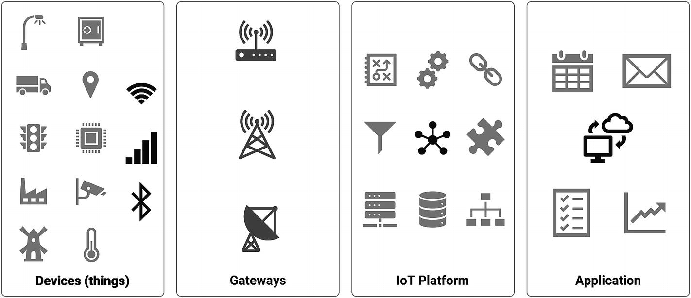
Figure 2-1
Functional blocks of an IoT solution
The Functional Blocks of an IoT Solution
At a high level, we can identify IoT solutions comprising four major functional blocks. If any of these blocks are missing, then it is not prudent to call it an IoT solution.
Devices (a.k.a. “things”) are physical sensors and actuators. They measure various parameters and translate them into electrical or digital data. These sensors are either connected to the host devices (typical for legacy upgrades) or integrated into the host devices (modern). These devices are critical nodes of an IoT application and are required to deliver full-solution functionality by acting as inputs, outputs, or both. Typical examples of such devices are thermostats, intelligent mousetraps, connected refrigerators, and so forth.
Gateways are edge devices that can communicate with the upstream system in one of two ways: with or without a gateway. Some devices have the capability to communicate directly over Internet Protocol (IP) using various communication protocols, such as REST, MQTT, AMQP, CoAP, and so forth. These capabilities are usually a result of integrated communication modules, such as Wi-Fi or GSM chips, which enable a device to connect to network gateways, such as Wi-Fi routers and mobile towers, and communicate with the upstream layer directly. In these cases, routers and mobile towers perform the job of the gateway.
However, not all devices are capable of direct Internet connectivity and do not have the necessary hardware built in. In these cases, they need to piggyback on some other device to help their data get pushed to the upstream layer. Gateways help devices do this. Usually, hardware gateways are built with dual communication technologies, which enable them to communicate with downstream devices with one type of channel and with upstream layers with another type of channel. Typical examples of such gateway capabilities include GSM and RF, GSM and Bluetooth, Wi-Fi and Bluetooth, Wi-Fi and XBee, LoRaWAN and Ethernet, and so forth. In some cases, smartphones are used as gateways, which is more prominent with Bluetooth Low Energy (BLE) devices.
In addition to providing a transport mechanism, a gateway can also provide optional functions, such as data segregation, clean up, aggregation, deduplication, and edge computing.
An IoT platform is the orchestrator of the whole IoT solution and is often hosted in the cloud. This block is responsible for communicating with downstream devices and ingesting large amounts of data at a very high speed. The platform is also responsible for storage of the data in a time series and structured format for further processing and analysis.
Depending upon the sophistication built into it, a platform may support deep data analyses and other operations. However, the core of the IoT platform is as an orchestrator of the whole system.
In most scenarios, applications are the front face of the whole solution; it must be presented to the end user in a meaningful way. These applications are desktop based, mobile based, or both. Applications also enrich the data from the platform in various ways and present it to the users in a usable format. Additionally, these applications integrate with other systems and applications at the interface level and enable interapplication data exchange. A typical example of such an operation is inventory-tracking devices equipped with tracking mobile applications to the users, and the data fed to the ERP system for stock keeping.
THE DETAILED BLOCK DIAGRAM OF AN IOT PLATFORM
We are more interested in the mechanics of the third block: the IoT platform. Let’s look at all the fundamental inclusions that an IoT platform should have to perform effectively. Figure 2-2 shows the block diagram of a typical IoT platform.
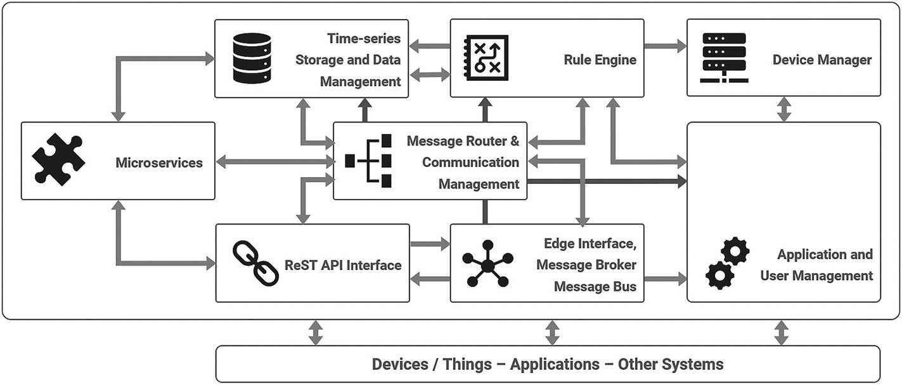
Figure 2-2
Block diagram of a typical IoT platform
Interconnecting arrows indicate the data and information flow between each block. Each block is indicative of the major functional component of the platform. The platform is installed on a virtual cloud machine or VPS (virtual private server) . It is highly recommended to use a Linux-based operating system, such as Ubuntu, Centos, Debian, OpenWRT, or LEDE, for better performance, security features, and overall control of the platform. The concept and block-level architecture does not change for any of these operating systems.
Edge Interface, Message Broker, and Message Bus
This module deals and talks with the physical world, especially heterogeneous devices and sensors. Since devices could be communicating over a multitude of communication technologies, such as Wi-Fi, Bluetooth, LoRaWAN, GPRS, and so forth, this module needs to cater to all of them. We can achieve this in a modular format where each type of communication protocol is dealt with separately. As an example, a Wi-Fi-capable device can be a REST API, which caters to the constrained devices. It could be an MQTT-based message broker, which enables communication in a pub/sub manner. For LoRaWAN (Long Range Wide Area Network) –based devices, there is another plugin to the main message broker, which talks with LoRaWAN network servers and performs decoding of packets.
NOTE
Pub-sub refers to the publish-and-subscribe paradigm of communication. It is explained in Chapter 6.
This module decouples the entire platform from devices in an effective way. Many edge interfaces and protocols are supported for modern IoT devices. Regardless of the medium of communication, network type used, and protocols in play, the message broker’s job is to consolidate the data in a unified manner and push it to the common message bus. All the other functional blocks share this message bus for further operation. The broker acts as a coordinator and consolidator of messages.
Message Router and Communication Management
Once the messages are available on the main message bus, the message may need to include more context or refinement to be useful to other modules. Some messages need feature enrichment and additional information to be appended or added separately, which depends on the context of the device deployment and application requirements. The functionality of enriching existing data messages, rebroadcasting them to the message bus, publishing additional contextual information and other messages after the main message arrives, and tagging them as appropriate is the job of the communication management module. Communication management functions coordinate with the message broker and the rule engine block and interacts with the device manager, as required.
In addition, the communication management module performs the duties of format conversions; for example, it translates data from CSV to JSON, or binary to text format, and so forth. We can also task it to perform certain operations, like deduplication of messages. Deduplication is the process of eliminating or discarding multiple duplicate messages or redundant data packets from the devices, as they may not be of any use. Deduplication schemes are dependent on device or sensor types, and we need to implement them on a case-by-case basis, although the methodology remains the same. As a communications router, this module can control further messaging and communication on the platform .
Time-Series Storage and Data Management
As the name suggests, this block stores all the received and parsed data that is available on the message bus in sequential (i.e., time-series style). While data storage is not the core function of the IoT platform, modules outside the platform handle it; although, it is an essential activity for coordination and orchestration perspective. Very often, communication and routing modules, or the message broker itself, need recent data for specific functional purposes; this storage comes in handy for all such instances.
For many IoT applications, users prefer to extract the data away from the IoT platform and store it in an application data warehouse for further processing. Therefore, it is often utilized for interim storage of the device data and is not meant for large-sized dataset storage.
Rule Engine
In my view, this is a very powerful block and provides enhanced capabilities to the platform. The rule engine is the execution block that monitors the message bus and events across the platform and takes action based on set rules.
For example, a typical rule engine function may look like this: “Trigger and broadcast alert message when the downstream device sends a data packet containing the keyword ka-boom.” The rule engine is constantly listening to the message bus broadcasts. When the communication block puts up a decoded data packet from the downstream device on to the message bus, a rule triggers. The rule engine broadcasts another message (alert) to the message bus. Since this happens all within the IoT platform and among closely coordinated modules, execution speed is quite fast.
The rule engine also helps with building modular rules for decoding and enriching existing or received data from devices, and therefore, augments the communication module’s functionality. In addition to that, it is easy to implement callbacks to other modules, applications, programs, and systems.
The REST API Interface
Restful APIs are useful for support functions and utilities that do not need constant or real-time connectivity and access. Although typically used by upstream programs and applications, downstream devices can also access these APIs when needed.
A classic example of such a use case is a temperature sensor with Wi-Fi___33 connectivity that sends readings every 15 minutes. Due to such a long time between two subsequent readings, a real-time connection or an always-on connectivity is undesired. A simple HTTP operation can do the data-sending job relatively more efficiently. In this case, the sensor can send the data over REST API to the platform. The REST API works with the message broker and communications manager to present the received data post to the main message bus; it may also use time-series database records to send back the response to the sensor. This response may contain additional information for the sensor to do its job in a certain way for the next round.
This API block can also support data aggregation and bulk operational functionalities, such as querying multiple records by the upstream application. This way, upstream applications and systems remain decoupled from the core platform blocks, thereby maintaining the partition of functions and ensuring security. Various role-based authentications can be built in for access to the API.
The REST API block can also feed into the rule engine and allow applications to configure or trigger specific rules at any given point in time. This also makes it possible for downstream devices to utilize the same functionality, which could be handy when devices need to initiate certain workflows automatically in place of application triggers. A good example is a smart lock; for instance, when there is activity at the front door that needs the homeowner’s attention when she is away from home. An upstream application may notify the user when the smart lock reports activity, and then expects the user to respond or react for further steps. If the user is not available, then the application can trigger the rule for predefined actions. If the severity of the alert is relatively high, then the device may be configured to not wait for user action or response, but directly trigger the default workflow (e.g., notifying security, etc.). These functionalities can come in handy when designing and operating an autonomous and intelligent fleet of devices.
Microservices
Besides data management, manipulation, and exchange functionalities, the IoT platform also needs certain support functions to function effectively. Services such as text messaging or email notifications, verifications, captcha, social media authentications, or payment services integration are a few examples of these auxiliary services. These services are bundled in the microservices block.
In case of frequent use of certain functionalities within the platform, it can be bundled and packaged under this block to separate it from the mainstream platform. Once separated and packaged, it then can be exposed to the blocks within and outside the platform for reuse.
Device Manager
When the platform starts to host approximately 50 or more devices, things could become difficult to manage. It becomes necessary to have some type of central control in place for managing things (a.k.a. devices). This is where the device manager block helps. It essentially provides the generic functionality of managing devices as assets. This includes listing all the devices, their active-inactive status, battery levels, network conditions, access keys, readings, stored data access, device details, session information, and other similar things.
The device manager also helps with managing over-the-air updates for a fleet of devices, or central monitoring functions for system admins. In certain use cases, devices also need access rights, and users may be assigned certain access rights to a set of devices. Management of such an accessibility matrix becomes easy with the device manager.
Application and User Management
This block provides functionalities similar to the device manager. The difference is that it provides functionalities for upstream applications and users. Typical user management functions, such as passwords and credentials, access keys, logins, and rights are managed through this block. For upstream applications and various other integrated systems, API keys, credentials, and access can be managed through the same block.
While it may appear to be more of an application-level functionality, it remains in an IoT platform’s interest to bind it as a platform function, so that it is integrated tightly with the overall architecture and set of things. IoT is the system of systems, and heterogeneous systems are a fact of this phenomenon. Letting these system functions get out of sync is the last thing that you want to happen with IoT solutions.
IS EVERYTHING FROM THIS BLOCK ARCHITECTURE MANDATORY?
No. While eight of the blocks define a very well-architected IoT platform, not all of them are mandatory or necessary. A specific use case or industry vertical may define this situation differently. You may not need all blocks at the outset, and they may be added later in the life cycle of the platform development.
The core functional blocks—the device interface and message broker, the message router and communications module, data storage, device management, and the rule engine are critical for the effective functioning of an IoT platform. Other blocks—REST APIs, microservices, and application and user management—are good to have and often make life easy but are not mandatory and do not obstruct functionality of the IoT platform.
When developing our IoT platform from the ground up, we will keep these functionalities on the back burner and will only implement them if time permits and resources are available.
What Is the Proposed Approach?
To develop an IoT platform in the quickest amount of time, we will not only develop it in modular form but will also do it in an agile way. Each module will be planned with functions and features set out, developed, and then deployed on the cloud for testing. Once we test an individual module and find it to be working as expected, we can go to the next module.
As a first step, we will set up the cloud environment for the platform. This is followed by setting up the essential components to develop for our first module: the edge interface and the message broker. The logical next step is to set up time-series data storage. Then we will develop basic REST APIs for the platform, followed by message router functionality.
Some of the microservices are developed after we have set up a fundamental wireframe of the platform. We will then iterate through all of these blocks a few more times to make a stable core for the platform.
Once we are happy with the core functionalities, the rule engine can be set up, followed by the device management functions. Application and user management is reviewed at the end because it is among the non-essential modules.
Summary
In this chapter, we discussed the functional blocks of an IoT platform, and we decided on the approach that we want to take toward building our own platform. In the next chapter, we discuss the essential requirements for building a platform. The detailed specifications of required elements, and how and where to get them, are covered. Chapter 3 also expands on the functional block diagram of platforms in the context of our planned work.
Sensors, Endpoints, and Power Systems
The Internet of Things (IoT) begins with sources of data or devices that perform an action. These we call endpoints, and they are the things associated with the internet. When one discusses IoT, in general, the actual sources of data are often overlooked. These sources are sensors outputting a stream of time-correlated data that must be transmitted securely, possibly analyzed, and possibly stored. The value of IoT is in the data in aggregate. Therefore, the data a sensor provides is crucial. However, for an architect, it is critical to understand the data as well as how the data is interpreted. Besides understanding what data is collected and how it is acquired, in a massive IoT deployment, it is useful to know what can be sensed, and what the constraints are for various sensors. For example, a system must account for lost devices and erroneous data. An architect must understand the reasons why data may not be reliable from sensors, and how a sensor can fail in the field. Essentially, we are connecting the analog world to the digital. The majority of connected things will be sensors, so it is important to understand their role.
This is what the IoT is in a nutshell. The massive growth of connected things and objects will be sensors and actuators, so it is important to understand their relationship in the architecture. This chapter will highlight sensor devices from an electronics and system point of view. It is important to understand the principles of what is being measured, and why. One should ask, "What type of sensor or edge device should I consider for the problem I'm trying to solve?" An architect should consider aspects of cost, features, size, usable life, and precision when deploying an IoT solution. Additionally, the power and energy of edge devices are rarely addressed in IoT literature, but are critical to building reliable and long-lasting technology. The reader should leave this chapter with a high-level grasp of sensor technology and its constraints.
In this chapter, we will cover the following topics:
- Sensing devices from thermocouples to MEMS sensors to vision systems
- Energy generation systems
- Energy storage systems
Sensing devices
We begin by focusing on the sensing or input devices. These come in a variety of forms and complexities, from simple thermocouples to advanced video systems. When one refers to the "billions of IoT things", this section will represent a broad range of sensing things. One reason IoT is a large growth area is the fact that these sensing systems have been reduced in size and cost substantially, with advances in semiconductor fabrication and micromachining.
Thermocouples and temperature sensing
Temperature sensors are the most prevalent form of sensor products. They exist just about everywhere. From smart thermostats to IoT cold storage logistics, from refrigerators to industrial machinery, they are prevalent, and are most likely the first sensing device you will be exposed to in an IoT solution.
Thermocouples
A thermocouple (or TC) is a form of temperature-sensing apparatus that doesn't rely on an excitation signal to operate. Therefore, they produce very small signals (often microvolts in amplitude). Two wires of two different materials meet where a temperature measurement is to be sampled. Each metal develops a voltage differential independently of each other. This effect is known as the Seebeck electromotive effect, in which the difference between the voltage of the two metals has a nonlinear relationship to the temperature.
The magnitude of the voltage depends on the metal material chosen. It is critical that the ends of the wires are thermally isolated from the system (and the wires need to be at the same controlled temperature). In the following diagram, you will see a thermal block whose temperature is controlled with a sensor. This is usually controlled via a technique called the cold junction compensation, where the temperature can vary, but is measured by the block sensor accurately.
When sampling the voltage differential, the software will usually have a look-up table to derive the temperature based on the nonlinear relationship of the metals chosen:
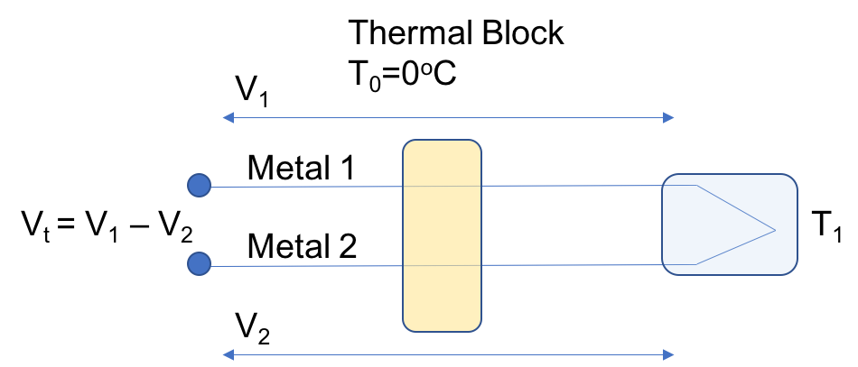
Thermocouple Schematic
Thermocouples should be used for simple measurements. The system can vary in accuracy as well, since subtle impurities can affect the wire composition and cause a mismatch in the lookup tables. Precision-grade thermocouples may be needed, but come at a higher cost. Another effect is aging. Since thermocouples are often used in industrial settings, high-heat environments can degrade the accuracy sensors over time. Therefore, IoT solutions must account for changes over the life of a sensor.
Thermocouples are good for wide temperature ranges, are color-coded for different metal combinations, and labeled by type (for example, E, M, PT-PD, to name a few). In general, these sensors are good for long distance measurements with long leads, and are often used in industrial and high-temperature environments.
Shown below are various thermocouple metal types and their respective energy linearities across a range of temperatures.
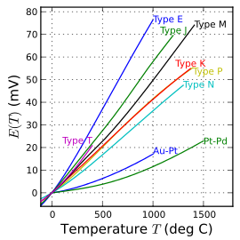
Thermocouple Type Characterization E(T):T
Resistance Temperature Detectors
Resistance Temperature Detectors (RTDs) operate within a narrow range of temperatures, but have much better accuracy than thermocouples (below 600 degrees Celsius). These are usually constructed with very fine platinum wire tightly wrapped around ceramic or glass. This produces a resistance-to-temperature relationship. Because it is a resistance-based measurement, an excitation current is needed to operate an RTD (1 mA).
The resistance of an RTD follows a predefined slope. RTDs are specified with a base resistance. A 200 PT100 RTD has a slope of 0.00200 Ohms/degrees Celsius from 0 to 100 degrees Celsius. Within that range (0 to 100 degrees Celsius), the slope will be linear. RTDs come in two, three, and four-wire packages, with four-wire models used for high-accuracy calibration systems. RTDs are often used with bridge circuits to increase resolution, with software linearizing the results:
Wire-wound RTD
RTDs are rarely used above 600 degrees Celsius, which limits their application in industry. At high temperatures, the platinum can become contaminated, leading to incorrect results; however, when measuring within their specified range, RTDs are fairly stable and accurate.
Thermistors
The last temperature sensing device is the thermistor. These are also resistance-based relationship sensors like RTDs, but produce a higher degree of change for a given temperature than an RTD. Essentially, these are resistors that vary based on temperature. They are also used in circuits to alleviate in-rush currents. Whereas an RTD has a linear relationship with a change in temperature, thermistors have a highly nonlinear relationship, and are suitable where a high resolution is needed for a narrow temperature range. There are two types of thermistors: NTC, where resistance decreases as temperatures rise; and PTC, where resistance increases with rising temperatures. The main difference from an RTD materially is the use of ceramics or polymers, whereas metals are the basis of RTDs.
Thermistors are found in medical devices, scientific equipment, food handling equipment, incubators, and home appliances such are thermostats.
Temperature sensor summary
In summary, the following table highlights the use cases and benefits of particular temperature sensors:
| Category | Thermocouples | Resistance Temperature Detectors | Thermistors |
|---|---|---|---|
| Temperature Range (degrees Celsius) | -180 to 2,320 | -200 to 500 | -90 to 130 |
| Response Time | Fast (microseconds) | Slow (seconds) | Slow (seconds) |
| Size | Large (~1 mm) | Small (5 mm) | Small (5 mm) |
| Accuracy | Low | Medium | Very high |
Hall effect sensors and current sensors
A hall effect sensor consists of a strip of metal that a current runs across. A stream of charged particles passing through a magnetic field will cause the beam to deflect from a straight line. If a conductor is placed in the magnetic field perpendicular to the electron flow, it will gather charge carriers and produce a voltage differential between the positive side of the metal strip and the negative side. This will produce a voltage differential that can be measured. The differential is called the Hall voltage, which is responsible for the phenomenon known as the Hall effect. This is illustrated in the following image. If a current is applied to a metal strip (as shown in the diagram) within a magnetic field, electrons will be attracted to one side of the strip, and holes to the other (see the curved line). This will induce an electric field that can be measured. If the field is strong enough, it will cancel out the magnetic force, and electrons will follow the straight line:

Example of the Hall effect.
Current sensors use the Hall effect for measuring the AC and DC currents of a system. There are two forms of current sensors: open loop, and closed loop. Closed loops are more expensive than open loop sensors, and are often used in battery-powered circuits.
Typical uses of Hall sensors include position sensing, magnetometers, highly reliable switches, and water level detection. They are used in industrial sensors to measure the rotational velocity of different machines and motors. Additionally, these devices can be created very inexpensively, and can tolerate harsh environmental conditions.
Photoelectric sensors
The detection of light and light intensity is used in many IoT sensor devices, such as security systems, smart switches, and smart street lighting. As the name implies, a photoresistor varies in resistance depending on light intensity, while photodiodes convert light into an electrical current.
Photoresistors are manufactured using a high-resistance semiconductor. The resistance decreases as more light is absorbed. In the dark, a photoresistor can have quite a high resistance (in the megaohm range). Photons absorbed by the semiconductor allow electrons to jump to the conduction band and conduct electricity. Photoresistors are wavelength sensitive, depending on their type and manufacturer; however, photodiodes are true semiconductors with a p-n junction. The device responds to light by creating an electron-hole pair. The holes move towards an anode, the electrons migrate to a cathode, and a current is produced. Traditional solar cells operate in this photovoltaic mode, producing electricity. Alternatively, a reverse bias can be used on the cathode to improve the latency and response time if needed:
| Category | Photoresistor | Photodiode |
|---|---|---|
| Light Sensitivity | Low | High |
| Active/Passive (Semiconductor) | Passive | Active |
| Temperature Sensitivity | Highly sensitive | Low |
| Latency to Light Changes | Long (10 milliseconds on, 1 second off) | Short |
PIR sensors
Pyroelectric Infrared (PIR) sensors contain two slots filled with material that reacts to IR radiation and heat. Typical use cases are security, or warm-body movement. In its simplest form, a Fresnel lens sits on top of the PIR sensor, allowing both slots to form a widening arc outward. These two arcs create detection zones. When a warm body enters one of the arcs, or leaves one, it generates a signal that is sampled. The PIR sensors use a crystalline material that generates current when subjected to IR radiation. A Field Effect Transistor (FET) detects the change in current, and sends the signal to an amplification unit. PIR sensors respond well in the 8 to 14 um range, which is typical of a human body.
The following diagram illustrates two IR regions detecting two zones. While this is fine for some purposes, generally we need to inspect an entire room or area for movement or activity:
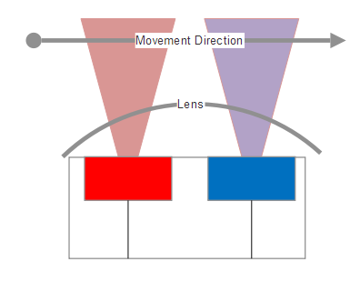
PIR Sensor. Two elements responding to a source of IR moving across its field of view.
To scan a larger area with a single sensor requires multiple Fresnel lenses that condense light from regions of the room to create distinct regions on the PIR array. This also has the effect of condensing the infrared energy to discrete FET areas. Typically, such devices allow the architect to control the sensitivity (range) as well as the hold time.
The hold time specifies for how long to output a motion event after an object has been detected moving across the path of the PIR. The shorter the hold time, the more events may be output. Below is a diagram of a typical PIR sensor with a Fresnel lens focusing on the substrate by a fixed focal length:
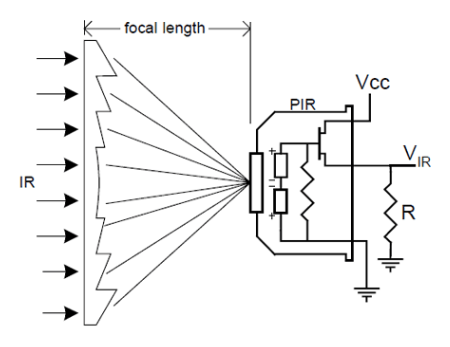
Left: Fresnel Lens condensing IR region onto PIR sensor. Cypress Microsystems Application Note AN2105.
LiDAR and active sensing systems
This section will cover active sensing systems. We have discussed many passive sensors that simply respond to environmental changes. Active sensing involves broadcasting a signal that is referenced to measure the environment either spatially or sensorily. While this area is broad, we will concentrate on LiDAR as a basis for active sensing systems.
LiDAR stands for Light Detecting and Ranging. This type of sensor measures the distance to a target by measuring a laser pulse reflection on the target. Where a PIR sensor will detect movement within a range, LiDAR is capable of measuring a range. The process was first demonstrated in the 1960s, and is now used pervasively in agriculture, automated and self-driving vehicles, robotics, surveillance, and environmental studies. This type of active sensing machine is also capable of analyzing anything that crosses its path. They are used to analyze gases, atmospheres, cloud formations and compositions, particulates, the speed of moving objects, and so on.
LiDAR is an active sensor technology, and broadcasts laser energy. As a laser hits an object, some of the energy will be reflected back towards the LiDAR emitter. The lasers used are typically in the 600 to 1000 nm wavelength, and are relatively inexpensive. Power is constrained for safety reasons to prevent eye damage. Some LiDAR units operate in the 1550 nm range, as that wavelength cannot be focused by the eye, rendering them harmless even at high energy. LiDAR systems are capable of very long ranging and scanning, even from satellites. The laser will pulse up to 150,000 pulses per second, which can reflect off an object back to a photodiode array. The laser apparatus can also sweep the scene via a rotating mirror to build a comprehensive 3D image of the environment. Each beam that is broadcast represents an angle, Time of Flight (TOF) measurement, and a GPS location. This allows the beams to form a representative scene.
To calculate the distance to an object, the equation is relatively simple:
LiDAR and other active sensors behave in a similar manner. Each has a representative broadcasting signal that returns to a sensor to build an image, or indicate that an event has occurred. These sensors are much more complex than simple passive sensors, and also take more power, cost, and area:
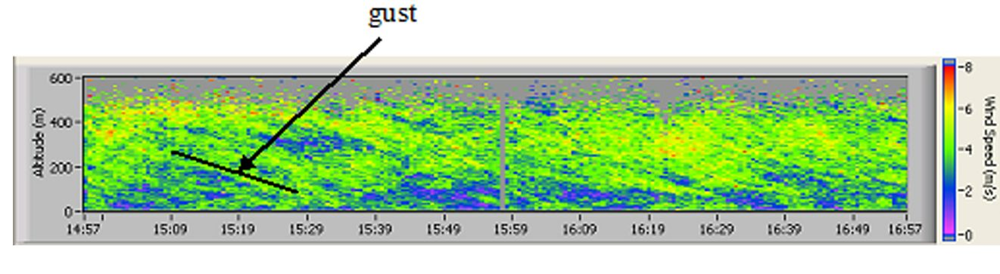
LiDAR: An example of a LiDAR image used to analyze atmospheric wind gusts to protect wind turbines. Image courtesy of NASA.
MEMS sensors
Micro-electromechanical systems (MEMS) have been in the industry since they were first produced in the 1980s; however, the origin of the first MEMS pressure sensor dates back to the 1960s at Kulite Semiconductor, who developed a piezoresistive pressure sensor. Essentially, they incorporate miniaturized mechanical structures that interact with electronic controls. Typically, these sensors are in the 1 to 100 um geometry range. Unlike the other sensors mentioned in this chapter, MEMS mechanical structures can spin, stretch, bend, move, or alter form, which in turn affects an electrical signal. This is the signal captured and measured by one particular sensor.
MEMS devices are manufactured in a typical silicon fabrication process using multiple masks, lithography, deposition, and etching processes. MEMS silicon dies are then packaged with other components such as operational amplifiers, analog to digital converters, and support circuitry. Typically, MEMS devices will be fabricated in the relatively large 1 to 100-micron range, whereas typical silicon structures are fabricated at 28 nm or below. The process involves a thin layer deposition and etching to create the 3D structures for a MEMS device.
Besides sensor systems, MEMS devices can be found in the heads of inkjet printers and modern overhead projectors such as digital light processor (DLP) projectors. The ability to synthesize MEMS sensing devices into packages as small as a pinhead has and will allow IoT growth into billions of connected things.
MEMS accelerometers and gyroscopes
Accelerometers and gyroscopes are common in many mobile devices today, and are used in positioning and movement tracking, such as with pedometers and fitness trackers. These devices will use a MEMS piezoelectric to produce a voltage in response to movement. Gyroscopes detect rotational motion, and accelerometers respond to changes in linear motion. The following diagram illustrates the basic principle of an accelerometer. Typically, a central mass that is fixed to a calibrated location via a spring will respond to changes in acceleration that are measured by varying capacitance in a MEMS circuit. The central mass will appear to be stationary in response to acceleration in one direction.
An accelerometer will be synthesized to respond to multiple dimensions (X, Y, Z) rather than one dimension, as shown in this illustration:
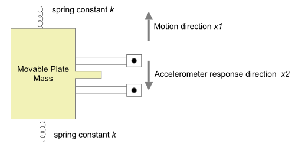
Accelerometer: The principle of acceleration measurement using a central mass suspended by a spring. Typically, these will be used in multiple dimensions.
Gyroscopes operate slightly differently. Rather than relying on the motion response to a central mass, gyros rely on the Coriolis effect of a rotating reference frame. The following figure demonstrates the concept. Without increasing velocity, the object would move in an arc, and not reach the northbound target. Moving towards the outer edge of the disk requires additional acceleration to maintain a northbound course.
This is the Coriolis acceleration. In a MEMS device, there is no spinning disk; rather, there is a resonant frequency applied to a series of MEMS-fabricated rings on a silicon substrate:
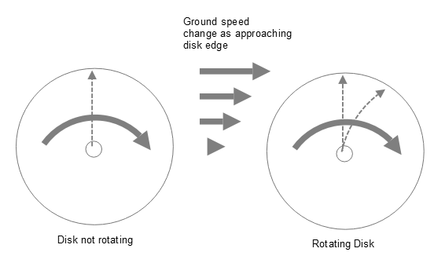
Accelerometer: Effect of a rotating disk on a path moving northward.
The rings are concentric, and cut into small arcs. Concentric rings allow for more area to gauge the accuracy of rotational movement. Single rings would require rigid support beams, and are not as reliable. By bifurcating the rings into arcs, the structure loses rigidity, and is more sensitive to rotational forces. The DC source creates an electrostatic force that resonates within the ring, while the electrodes attached to the rings detect the changes in the capacitor. If the resonating rings are perturbed, the Coriolis acceleration is detected. The Coriolis acceleration is defined by the following equation:
This equation states that the acceleration is a product of the rotation of the system and the velocity of the rotating disk, as shown in the preceding diagram, or the resonant frequency of the MEMS device, as shown in the following diagram. Given a DC power source, a force changes the gap size and the overall capacitance of the circuit. The outer electrodes detect deflection in the ring, while inner electrodes provide capacitance measurements:
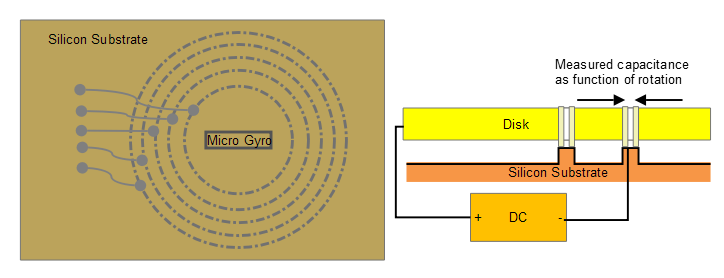
Right: Concentric cut rings representing the gyro sensor sitting upon a silicon substrate. Left: the disk gap connected to a corresponding.
Both gyroscopes and accelerometers will require power supplies and an op-amp for signal conditioning. After conditioning, the output is ready to be sampled by a digital signal processor.
These devices can be synthesized in very small packages, such as the Invensense MPU-6050, which includes a 6-axis gyro and accelerometer in a small 4 mm x 4 mm x 1 mm package. The device draws on 3.9 mA of current, and is good for low power sensing.
MEMS microphones
MEMS devices can also be used for sound and vibration detection. These types of MEMS devices are related to the accelerometers previously covered. For IoT deployments, sound and vibration measurements are common in the industrial IoT and predictive maintenance applications. For example, an industrial machine that rotates or mixes a load of material in chemical manufacturing, or in centrifuges to separate mixtures, needs precise leveling. A MEMS sound or vibration unit will typically be used to monitor the health and safety of such equipment.
This type of sensor will require an analog-to-digital converter of sufficient sampling frequency. Additionally, an amplifier is used to strengthen the signal. The impedance of a MEMS microphone is in the order of several hundred ohms (which requires careful attention to the amplifier used). A MEMS microphone can be analog or digital. An analog variety will be biased to some DC voltage, and will be attached to a codec for analog-to-digital conversion. A digital microphone has the ADC close to the microphone source. This is useful when there is signal interference from cellular or Wi-Fi signals near the codec.
The output of a digital MEMS microphone can either be pulse density modulated (PDM), or sent over I2S format. PDM is a high sampling rate protocol that has the ability to sample from two microphone channels. It does this by sharing a clock and data line, and sampling from one of the two microphones on different clock periods. I2S doesn't have a high sampling rate, and the decimation at audio rates (Hz to kHz range) results in fair quality. This still allows multiple microphones to be used in sampling, but may not require an ADC at all, since the decimation is happening in the microphone. A PDM, with its high sampling rate, will need to be decimated by a digital signal processor, or DSP.
MEMS pressure sensors
Pressure and strain gauges are used in a variety of IoT deployments, from smart cities monitoring infrastructure to industrial manufacturing. These are typically used to measure fluid and gas pressures. The heart of the sensor is a piezoelectric circuit. A diaphragm will be placed above or below a cavity on the piezoelectric substrate. The substrate is flexible, and allows the piezo crystals to change shape. This change in shape results in a directly correlated resistance change in the material:
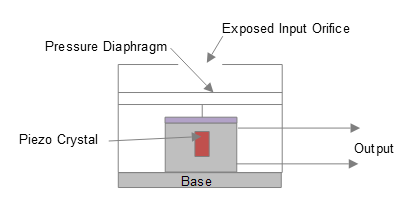
PressureSensor Anatomy
This type of sensor, as well as others listed in this chapter based on an excitation current, relies on a Wheatstone bridge to measure changes. Wheatstone bridges may come in two, four, or six-wire combinations. The change in voltage is measured across the bridge as the piezoelectric substrate flexes and changes resistance:
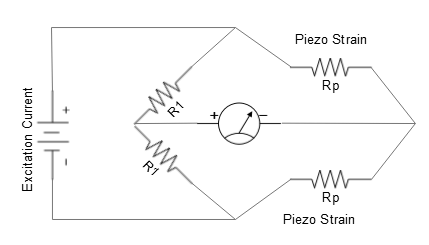
Wheatstone Bridge used for amplification of MEMS pressure sensor
Smart IoT endpoints
So far, we have examined very simple sensors that simply return information in a binary or analog form that must be sampled. There are, however, IoT devices and sensors that have substantial processing power and performance for the tasks they undertake. Smart sensors include devices such as video cameras and vision systems. Smart sensors can include substantial amounts of processing in the form of high-end processors, digital signal processors, FPGAs, and custom ASICs. In this section, we will explore the details of one form of smart sensor: a vision system.
Vision system
In contrast with the simple sensors explored earlier, vision systems are much more complex, which results in substantial hardware, optics, and imaging silicon. Vision systems start with a lens that observes a scene. A lens provides focus, but also provides more light saturation to the sensing element. In modern vision systems, one of two types of sensing elements is used: charge-coupled devices (CCD), or complementary metal-oxide (CMOS) devices. The difference between CMOS and CCD can be generalized as:
- CCD: Charge is transported from the sensor to the edge of the chip to be sampled sequentially via an analog-to-digital converter. CCDs create high-resolution and low-noise images. They consume considerable power (100x that of CMOS). They also require a unique manufacturing process.
- CMOS: Individual pixels contain transistors to sample the charge and allow each pixel to be read individually. CMOS is more susceptible to noise, but uses little power.
Most sensors are built using CMOS in today's market. A CMOS sensor is integrated into a silicon die that appears as a two-dimensional array of transistors arranged in rows and columns over a silicon substrate. A series of microlenses will sit upon each red, green, or blue sensor focusing incidental rays onto transistor elements. Each of these microlenses attenuates a specific color to a specific set of photodiodes (R, G, or B) that respond to the level of light; however, lenses are not perfect. They can add chromatic aberrations where different wavelengths refract at different rates, which leads to different focal lengths and blur. A lens can also distort an image, causing pincushioning effects.
Next will come a series of steps to filter, normalize, and convert the image several times into a usable digital image. This is the heart of the image signal processor (ISP), and the steps may be followed in this order:
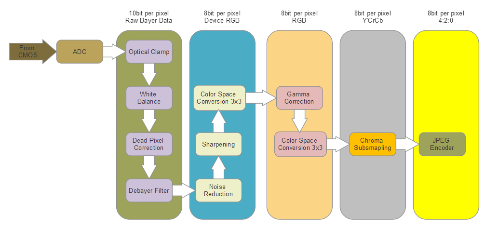
Image Sensor: Typical image signal processor pipeline for color video.
Note the numerous conversions and processing of each stage of the pipeline for each pixel in the image. The amount of data and processing requires substantial custom silicon or digital signal processors. The following lists the functional block responsibilities in the pipeline:
- Analog-to-digital conversion: Amplification of sensor signal then converted to digital form (10-bit). Data is read in from the photodiode sensor array as a flattened series of rows/columns representing the image just captured.
- Optical clamp: Removes sensor biasing effects due to sensor black level.
- White balance: Mimics chromatic display in the eye for different color temperatures, and neutral tones appear neutral. Performed using matrix conversions.
- Dead pixel correction: Identifies dead pixels, and compensates for their loss using interpolation, dead pixels are replaced with the average of neighboring pixels.
- Debayer filtering and demosaicing: Arranges RGB data to saturate green over red and blue content for luminance sensitivity adjustment. Also creates a planar format of images from sensor-interlaced content. More advanced algorithms preserve edges in images.
- Noise reduction: All sensors introduce noise. Noise can be associated with the non-uniformity of pixel sensitivity at a transistor level, or leakage of the photodiode, revealing dark regions. Other forms of noise exist as well. This phase removes white and coherent noise introduced in the image capture through a median filter (3 x 3 array) across all pixels. Alternatively, a despeckle filter can be used, requiring pixels to be sorted, and other methods exist as well. However, they all walk the pixel matrix.
- Sharpening: Applies a blur to an image using a matrix multiplication, then combines the blur with detail in content regions to create a sharpening effect.
- Color space conversion 3 x 3: Color space conversion to RGB data for RGB particular treatments.
- Gamma Correction: Corrects for CMOS image sensor nonlinear response on RGB data to different irradiance. Gamma correction uses a look-up table (LUT) to interpolate and correct an image.
- Color Space Conversion 3 x 3: Additional color space conversion from RGB to Y'CbCr format. YCC was chosen, since Y can be stored at a higher resolution than CbCr without the loss of visual quality. 4:2:2 bit representation.
- Chroma subsampling: Due to nonlinearities in RGB tones, this phase corrects images to mimic other media such as film for tonal matching and quality.
- JPEG encoder: Standard JPEG compression algorithm.
It should be emphasized here that this is a good example of how complex a sensor can be, and how much data, hardware, and complexity can be attributed to a simple vision system. The amount of data passing through a vision system or camera at a conservative 60 frames per second at 1080p resolution is massive. Assuming all the phases (except JPEG compression) move through an ISP in fixed-function silicon (as in an ASIC) one cycle at a time, the total amount of data processed is 1.368 GBpsec. Accounting for JPEG compression as the last step brings the amount of data to well over 2GB/sec in processing through custom silicon and CPU/DSP cores. One would never stream raw Bayer image video to the cloud for processing - this work must be performed as close to the video sensor as possible.
Sensor fusion
One aspect that needs consideration with all the sensor devices described in this chapter is the concept of sensor fusion. Sensor fusion is the process of combining several different kinds of sensor data to reveal more about context than a single sensor can provide. This is important in the IoT space, since a single thermal sensor has no notion of what causes a rapid temperature change. However, when combined with data from other sensors nearby that look at PIR motion detection and light intensity, an IoT system could discern that a large number of people are congregating in a certain area while the sun is shining, and could then make the decision to increase air circulation in a smart building. A simple thermal sensor only records the current temperature value, and has no contextual awareness that the heat is rising due to people congregating and sunlight shining.
With time-correlated data from multiple sensors (edge and cloud), processing can make better decisions based on more data. This is one of the reasons that there will be a large influx of data from sensors to the cloud, and this is causing big data growth. As sensors become cheaper and easier to integrate, as with the TI SensorTag, we will see more combined sensing to provide contextual awareness.
There are two modes of sensor fusion:
- Centralized: Where raw data is streamed and aggregated to a central service and fusion occurs there (cloud-based, for example)
- De-centralized: Where data is correlated at the sensor (or close to it)
The basis of correlating sensor data is usually expressed through the central limit theorem, where two sensor measurements, x1 and x2, are combined to reveal a correlated measurement, x3, based on the combined variances. This is simply adding two measures, and weighting the sum by the variances:
Other sensor fusion methods used are Kalman filters and Bayesian networks.
Input devices
There are many other forms of sensing devices we haven't talked about in this chapter, including various gas sensors, humidity sensors, radon and radiation sensors, smoke sensors, ultrasonic sensors, and so on. This chapter, however, should give the reader a working knowledge of the sensor input fundamentals and challenges in choosing the correct sensing options.
Up to this point, we have discussed endpoint devices such as sensors. These devices send a constant stream of data to an edge device, or the cloud. The IoT consists of bi-directional systems. Input may arrive at an endpoint from the cloud, or data may be sent from an endpoint to multiple subscribers in the cloud. This short section covers basic actuators and output devices.
Output devices
Output devices in the IoT ecosphere can be just about anything, from a simple LED to a full video system. Other types of output include actuators, stepper motors, speakers and audio systems, industrial valves, and so on. It stands to reason that these devices need various control systems of differing complexity. Depending on the type of output and the use case they serve, it also should be expected that much of the control and processing needs to be located at the edge, or close to the device (versus complete control in the cloud). A video system, for example, can stream data from cloud providers, but needs output hardware and buffering capabilities at the edge.
In general, output systems can require substantial energy to convert to mechanical movement, thermal energy, or even light. A small hobbyist solenoid to control fluid or gas flow can require 9 to 24 VDC and draw 100 mA to operate reliably and produce five Newton's of force. Industrial solenoids operate in hundreds of volts.
Functional examples (putting it all together)
A collection of sensors is fairly useless unless the data they collect can be transmitted and processed. Whether that is a local embedded controller or sent upstream to a cloud, more hardware is needed to build the system. Typically, the sensors will use established IO interface and communication systems, such as I2C, SPI, UART, SPI, or other low-speed IOs. Other devices such as video systems will need much faster IO to maintain high resolution and fast video frame rates such as MIPI, USB, or even PCI-Express. To communicate wirelessly, the sensors will need to be used with wireless transport hardware like Bluetooth, Zigbee, or 802.11. All this requires extra componentry, which we will cover in this section.
Functional example – TI SensorTag CC2650
The Texas Instruments CC2650 SensorTag is a good example of an IoT sensor module for development, prototyping, and design. SensorTag has the following features and sensors in the package:
Sensor input
- Ambient light sensor (TI Light Sensor OPT3001)
- Infrared temperature sensor (TI Thermopile infrared TMP007)
- Ambient temperature sensor (TI light sensor OPT3001)
- Accelerometer (Invensense MPU-9250)
- Gyroscope (Invensense MPU-9250)
- Magnetometer (Bosch SensorTec BMP280)
- Altimeter/Pressure sensor (Bosch SensorTec BMP280)
- Humidity sensor (TI HDC1000)
- MEMS microphone (Knowles SPH0641LU4H)
- Magnetic sensor (Bosch SensorTec BMP280)
- 2 Push-button GPIOs
- Reed relay (Meder MK24)
Output devices
- Buzzer/speaker
- 2 LEDs
Communications
- Bluetooth Low Energy (Bluetooth Smart)
- Zigbee
- 6LoWPAN
This package is powered by a single CR2032 coin cell battery. Finally, the device can be placed into beacon mode (iBeacon), and used as a message broadcaster. Following is the block diagram of the CC2650 SensorTag module:
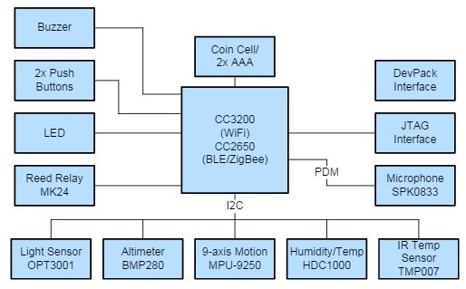
TI CC2650 SensorTag. Courtesy of Texas Instruments, TI Multi-Standard CC2650 SensorTag Design Guide. Texas Instruments Incorporated, 2015.
The next image is of the block diagram of the MCU. The MCU provides the IO and processing ability using an ARM Cortex M4, and connects over various bus interfaces to sensor components on the module:
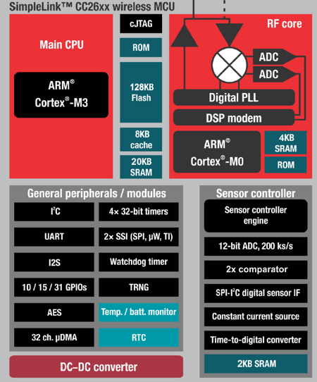
TI CC2650 MCU Block Diagram. Courtesy of Texas Instruments, TI Multi-Standard CC2650 SensorTag Design Guide. Texas Instruments Incorporated, 2015.
This device is packed with a number of sensors, communication systems, and interfaces, but the amount of processing power is limited. The device uses a processing module from TI (MCU CC265), which includes a small ARM Cortex M3 CPU with only 128 KB of flash memory and 20 KB of SRAM. This was chosen for its extremely low power consumption. While power-efficient, this limits the amount of processing and resources on this system. Typically, components like these will need to be accompanied by a gateway, router, cell phone, or some other smart device. Sensor devices such as these that are built for low power and low cost would not have the resources for more demanding applications such as MQTT protocol stacks, data aggregation, cellular communication, or analytics. For that matter, most endpoint sensing devices one will see in the field are simpler than this component, to further reduce cost and power.
Chapter 1
A Systems Approach to Embedded Systems Design
IN THIS CHAPTER
• Defining embedded system
• Introducing the design process
• Defining an embedded systems architecture
• Discussing the impact of architecture
• Summarizing the remaining sections of the book
1.1 What Is an Embedded System?
An embedded system is an applied computer system, as distinguished from other types of computer systems such as personal computers (PCs) or supercomputers. However, you will find that the definition of “embedded system” is fluid and difficult to pin down, as it constantly evolves with advances in technology and dramatic decreases in the cost of implementing various hardware and software components. Internationally, the field has outgrown many of its traditional descriptions. Because the reader will likely encounter some of these descriptions and definitions, it is important to understand the reasoning behind them and why they may or may not be accurate today, and to be able to discuss them knowledgeably. The following are a few of the more common descriptions of an embedded system:
• Embedded systems are more limited in hardware and/or software functionality than a PC. This holds true for a significant subset of the embedded systems family of computer systems. In terms of hardware limitations, this can mean limitations in processing performance, power consumption, memory, hardware functionality, etc. In software, this typically means limitations relative to a PC—fewer applications, scaled-down applications, no operating system (OS) or a limited OS, or less abstraction-level code. However, this definition is only partially true today as boards and software typically found in PCs of the past and present have been repackaged into more complex embedded system designs.
• An embedded system is designed to perform a dedicated function. Most embedded devices are primarily designed for one specific function. However, we now see devices such as personal data assistant (PDA)/cell phone hybrids, which are embedded systems designed to be able to do a variety of primary functions. Also, the latest digital TVs include interactive applications that perform a wide variety of general functions unrelated to the “TV” function but just as important, such as e-mail, web browsing, and games.
• An embedded system is a computer system with higher quality and reliability requirements than other types of computer systems. Some families of embedded devices have a very high threshold of quality and reliability requirements. For example, if a car’s engine controller crashes while driving on a busy freeway or a critical medical device malfunctions during surgery, very serious problems result. However, there are also embedded devices, such as TVs, games, and cell phones, in which a malfunction is an inconvenience but not usually a life-threatening situation.
• Some devices that are called embedded systems, such as PDAs or web pads, are not really embedded systems. There is some discussion as to whether or not computer systems that meet some, but not all, of the traditional embedded system definitions are actually embedded systems or something else. Some feel that the designation of these more complex designs, such as PDAs, as embedded systems is driven by non-technical marketing and sales professionals, rather than engineers. In reality, embedded engineers are divided as to whether these designs are or are not embedded systems, even though currently these systems are often discussed as such among these same designers. Whether or not the traditional embedded definitions should continue to evolve or a new field of computer systems be designated to include these more complex systems will ultimately be determined by others in the industry. For now, since there is no new industry-supported field of computer systems designated for designs that fall in between the traditional embedded system and the general-purpose PC systems, this book supports the evolutionary view of embedded systems that encompasses these types of computer system designs.
• Electronic devices in just about every engineering market segment are classified as embedded systems (see Table 1-1). In short, outside of being “types of computer systems,” the only specific characterization that continues to hold true for the wide spectrum of embedded system devices is that there is no single definition reflecting them all.
Table 1-1 Examples of embedded systems and their markets[1]
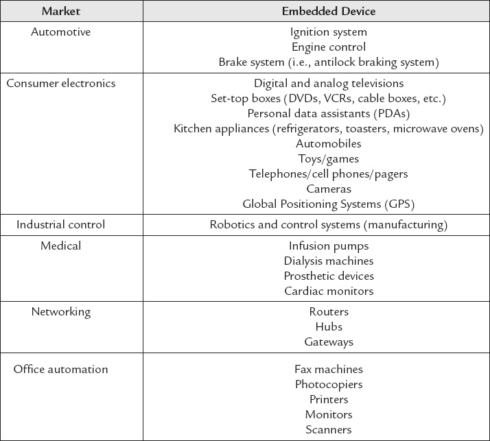
1.2 An Introduction to Embedded Systems Architecture
In order to have a strong technical foundation, all team members must first start with understanding the architecture of the device they are trying to build. The architecture of an embedded system is an abstraction of the embedded device, meaning that it is a generalization of the system that typically doesn’t show detailed implementation information such as software source code or hardware circuit design.[3] At the architectural level, the hardware and software components in an embedded system are instead represented as some composition of interacting elements. Elements are representations of hardware and/or software whose implementation details have been abstracted out, leaving only behavioral and inter-relationship information. Architectural elements can be internally integrated within the embedded device or exist externally to the embedded system and interact with internal elements. In short, an embedded architecture includes elements of the embedded system, elements interacting with an embedded system, the properties of each of the individual elements, and the interactive relationships between the elements.
Architecture-level information is physically represented in the form of structures. A structure is one possible representation of the architecture, containing its own set of represented elements, properties, and inter-relationship information. A structure is therefore a “snapshot” of the system’s hardware and software at design time and/or at runtime, given a particular environment and a given set of elements. Since it is very difficult for one “snapshot” to capture all the complexities of a system, an architecture is typically made up of more than one structure. All structures within an architecture are inherently related to each other, and it is the sum of all these structures that is the embedded architecture of a device. Table 1-2 summarizes some of the most common structures that can make up embedded architectures, and shows generally what the elements of a particular structure represent and how these elements inter-relate. While Table 1-2 introduces concepts to be defined and discussed later, it also demonstrates the wide variety of architectural structures available to represent an embedded system. Architectures and their structures—how they inter-relate, how to create an architecture, etc.—will be discussed in more detail in Chapter 11.
Table 1-2 Examples of architectural structures[4]
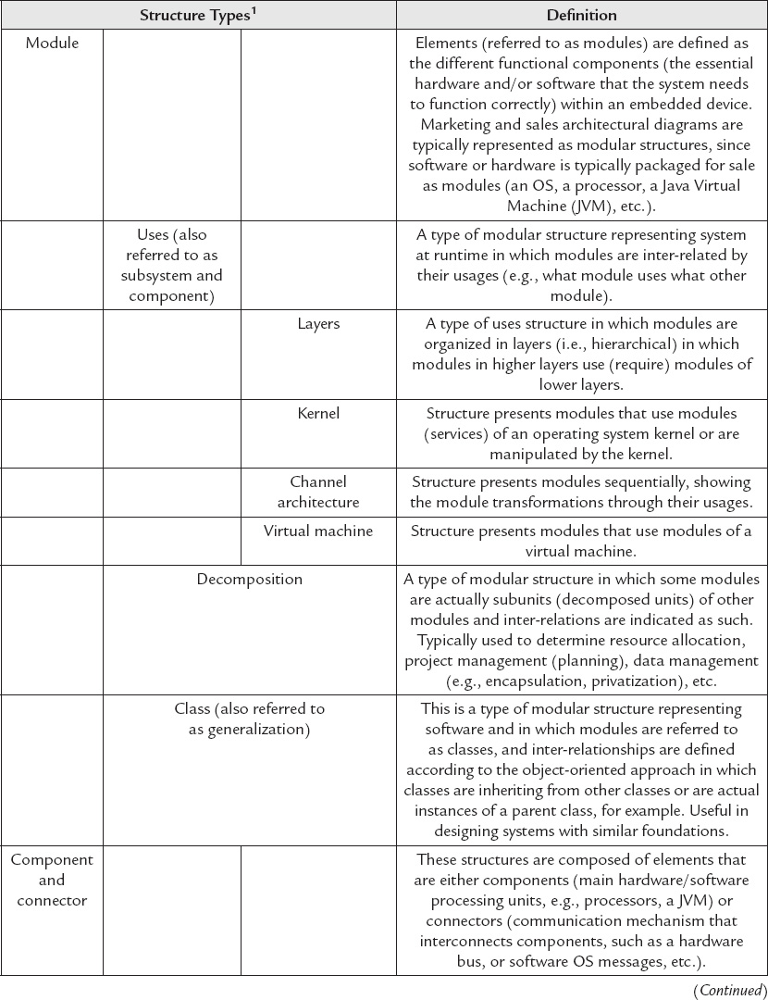
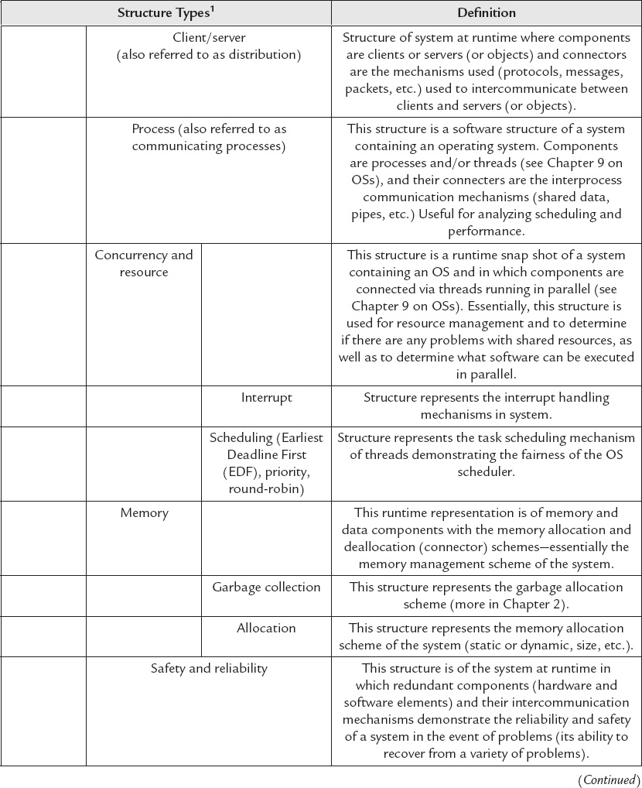
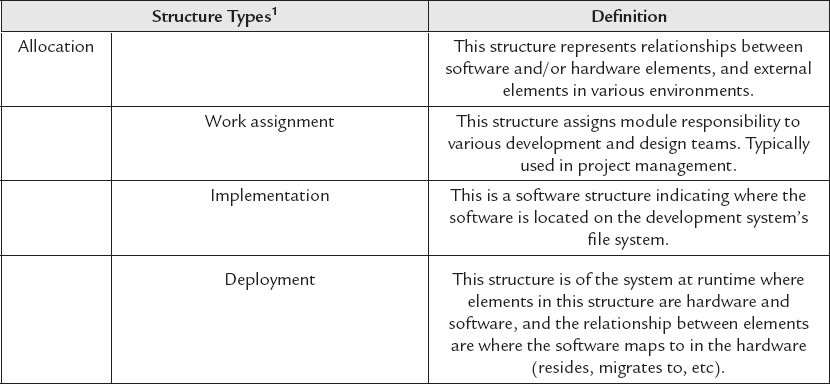
1Note that in many cases the terms “architecture” and “structure” (one snapshot) are sometimes used interchangeably, and this will be the case in this book.
In short, an embedded system’s architecture can be used to resolve these types of challenges early in a project. Without defining or knowing any of the internal implementation details, the architecture of an embedded device can be the first tool to be analyzed and used as a high-level blueprint defining the infrastructure of a design, possible design options, and design constraints. What makes the architectural approach so powerful is its ability to informally and quickly communicate a design to a variety of people with or without technical backgrounds, even acting as a foundation in planning the project or actually designing a device. Because it clearly outlines the requirements of the system, an architecture can act as a solid basis for analyzing and testing the quality of a device and its performance under various circumstances. Furthermore, if understood, created, and leveraged correctly, an architecture can be used to accurately estimate and reduce costs through its demonstration of the risks involved in implementing the various elements, allowing for the mitigation of these risks. Finally, the various structures of an architecture can then be leveraged for designing future products with similar characteristics, thus allowing design knowledge to be reused, and leading to a decrease of future design and development costs.
By using the architectural approach in this book, I hope to relay to the reader that defining and understanding the architecture of an embedded system is an essential component of good system design. This is because, in addition to the benefits listed above:
\1. Every embedded system has an architecture, whether it is or is not documented, because every embedded system is composed of interacting elements (whether hardware or software). An architecture by definition is a set of representations of those elements and their relationships. Rather than having a faulty and costly architecture forced on you by not taking the time to define an architecture before starting development, take control of the design by defining the architecture first.
\2. Because an embedded architecture captures various views, which are representations of the system, it is a useful tool in understanding all of the major elements, why each component is there, and why the elements behave the way they do. None of the elements within an embedded system works in a vacuum. Every element within a device interacts with some other element in some fashion. Furthermore, externally visible characteristics of elements may differ given a different set of other elements to work with. Without understanding the “whys” behind an element’s provided functionality, performance, etc., it would be difficult to determine how the system would behave under a variety of circumstances in the real world.
Even if the architectural structures are rough and informal, it is still better than nothing. As long as the architecture conveys in some way the critical components of a design and their relationships to each other, it can provide project members with key information about whether the device can meet its requirements, and how such a system can be constructed successfully.
1.3 The Embedded Systems Model
Within the scope of this book, a variety of architectural structures are used to introduce technical concepts and fundamentals of an embedded system. I also introduce emerging architectural tools (i.e., reference models) used as the foundation for these architectural structures. At the highest level, the primary architectural tool used to introduce the major elements located within an embedded system design is what I will simply refer to as the Embedded Systems Model, shown in Figure 1-1.
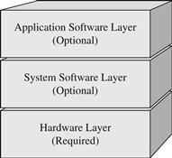
Figure 1-1 Embedded Systems Model.
What the Embedded Systems Model implies is that all embedded systems share one similarity at the highest level; that is, they all have at least one layer (hardware) or all layers (hardware, system software and application software) into which all components fall. The hardware layer contains all the major physical components located on an embedded board, whereas the system and application software layers contain all of the software located on and being processed by the embedded system.
This reference model is essentially a layered (modular) representation of an embedded systems architecture from which a modular architectural structure can be derived. Regardless of the differences between the devices shown in Table 1-1, it is possible to understand the architecture of all of these systems by visualizing and grouping the components within these devices as layers. While the concept of layering isn’t unique to embedded system design (architectures are relevant to all computer systems, and an embedded system is a type of computer system), it is a useful tool in visualizing the possible combinations of hundreds, if not thousands, of hardware and software components that can be used in designing an embedded system. In general, I selected this modular representation of embedded systems architecture as the primary structure for this book for two main reasons:
\1. The visual representation of the main elements and their associated functions. The layered approach allows readers to visualize the various components of an embedded system and their inter-relationship.
\2. Modular architectural representations are typically the structures leveraged to structure the entire embedded project. This is mainly because the various modules (elements) within this type of structure are usually functionally independent. These elements also have a higher degree of interaction, thus separating these types of elements into layers improves the structural organization of the system without the risk of oversimplifying complex interactions or overlooking required functionality.
Sections II and III of this book define the major modules that fall into the layers of the Embedded Systems Model, essentially outlining the major components that can be found in most embedded systems. Section IV then puts these layers together from a design and development viewpoint, demonstrating to the reader how to apply the technical concepts covered in previous chapters along with the architectural process introduced in this chapter. Throughout this book, real-world suggestions and examples are provided to present a pragmatic view of the technical theories, and as the key teaching tool of embedded concepts. As you read these various examples, in order to gain the maximum benefits from this text and to be able to apply the information provided to future embedded projects, I recommend that the reader note:
• The patterns that all these various examples follow, by mapping them not only to the technical concepts introduced in the section, but ultimately to the higher-level architectural representations. These patterns are what can be universally applied to understand or design any embedded system, regardless of the embedded system design being analyzed.
• Where the information came from. This is because valuable information on embedded systems design can be gathered by the reader from a variety of sources, including the internet, articles from embedded magazines, the Embedded Systems Conference, data sheets, user manuals, programming manuals, and schematics, to name just a few.
1.4 Why the Holistic, Architectural Systems Engineering Approach? The Golden Rules …
This book uses a holistic, architectural systems engineering approach to embedded systems in demystifying embedded systems and the different types of components that can make up their internal designs. This is because one of the most powerful methods of insuring the success of an engineering team is by taking the systems approach to defining the architecture and implementing the design.
A systems engineering approach addresses the reality that more than the pure embedded systems technology, alone, will impact the successful engineering of a product. In other words, Rule 1 to remember is that building an embedded system and taking it to production successfully requires more than just technology!
Many different influences will impact the process of architecting an embedded design and taking it to production. This can include influences from financial, technical, business-oriented, political, and/or social sources, to name a few. These different types of influences generate the requirements, the requirements in turn generate the embedded system’s architecture, this architecture then is the basis for producing the device, and the resulting embedded system design in turn provides feedback for requirements and capabilities back to the team. So, it is important for embedded designers to understand and plan for the technical as well as the non-technical aspects of the project, be they social, political, legal, and/or financial influences in nature. This is because the most common mistakes which kill embedded systems projects are typically unrelated to one specific factor in itself, for example:
• The process of defining and capturing the design of a system.
• Cost limitations.
• Determining a system’s integrity, such as reliability and safety.
• Working within the confines of available elemental functionality (processing power, memory, battery life, etc.).
• Marketability and salability.
• Deterministic requirements.
The key is for the team to identify, understand, and engage these different project influences from the start and throughout the life cycle of the project. The core challenges that real-world development teams building any embedded system face are handling these influences while balancing quality versus schedule versus features. Team members who recognize this wisdom from day 1 are more likely to insure project success within quality standards, deadlines, and costs.
The next rule to succeeding at embedded systems design is team members having the discipline in following development processes and best practices (Rule 2). Best practices can be incorporated into any development team’s agreed upon process model and can include everything from focusing on programming language-specific guidelines to doing code inspections to having a hard-core testing strategy, for example. In the industry, there are several different process models used today, with newer software process schemes and improvements being introduced, constantly. However, most of these approaches used by embedded design teams are typically based upon one or some hybrid combination of the following general schemes:
• Big-bang: projects with essentially no planning, specific requirements, or processes in place before and during the development of a system.
• Code-and-fix: projects with no formal processes in place before the start of development, but in which product requirements are defined.
• XP (extreme programming) and TDD (test-driven development): projects driven by re-engineering and ad-hoc testing of code over-and-over until the team gets it right, or the project runs out of money and/or time.
• Waterfall: projects where the process for developing a system occurs in steps and where results of one step flow into the next step.
• Hybrid spiral: projects in which the system is developed in steps, and throughout the various steps, feedback is obtained and incorporated back into the project at each process step.
• Hybrid iterative models: such as the Rational Unified Process (RUP), which is a framework that allows for adapting different processes for different stages of projects.
• Scrum: another framework for adapting different processes for different stages of projects, as well as allowing team members to hold various roles throughout the project. Scrum incorporates shorter-term, more stringent deadlines and continual communication between team members.
Whether an embedded design team is following a similar process to what is shown in Figure 1-2 or some other development model, the team members need to objectively evaluate how well a development process model is working for them. For instance, the team can begin by doing practical and efficient assessments by first outlining the development goals the team wishes to achieve, as well as what challenges team members are facing. Then team members focus on objectively investigating and documenting what existing development processes team members are following, including:
• One-shot project activities.
• Reoccurring project activities.
• Functional roles of team members at various stages of a project.
• Measuring and metering of development efforts (what is working versus what is crippling development efforts).
• Project management, release management, and configuration management efforts.
• Testing and verification efforts.
• Infrastructure and training (for getting team members up and running efficiently).
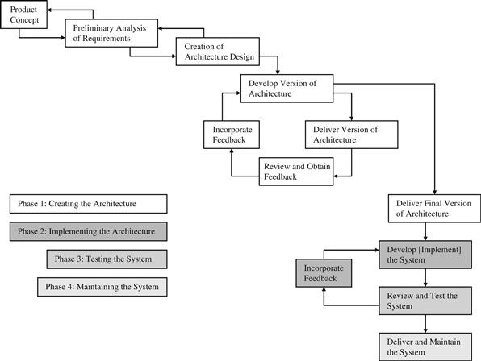
Figure 1-2 Embedded Systems Design and Development Lifecycle Model.[2]
Finally, follow through with defining improvements to these existing processes that all team members must adhere to. This means looking into the different possibilities of what team members are ready to implement relative to development efforts, in terms of more disciplined measures. There are also standard industry approaches, such as via CMMI (Capability Maturity Model Integration), that a team can use to introduce improvements and increase discipline in order to save money and save time, as well as improve the quality of the product.
The next step is then for the team to transform these processes into pragmatic tools for solving the everyday challenges, and finding the best solution. Project teams typically face some combination of the following solutions when facing the challenge to successfully build an embedded system:
× Option 1 Don’t ship.
× Option 2 Blindly ship on time, with buggy features.
× Option 3 Pressure tired developers to work even longer hours.
× Option 4 Throw more resources at the project.
× Option 5 Let the schedule slip.
√ Option 6 Healthy shipping philosophy: “Shipping a very high quality system on-time.”
Solutions 1–5 are unfortunately what happens too often in the industry. Obviously, “not shipping” is the option everyone on the team wants to avoid. With “no” products to sell, a team cannot be sustained indefinitely—and ultimately neither can a company. “Shipping a buggy product” should also be avoided at all costs. It is a serious problem when developers are forced to cut corners to meet the schedule relative to design options, are being forced to work overtime to the point of exhaustion, and are undisciplined about using best practices when programming, doing code inspections, testing, etc. This is because of the high risk that what is deployed will contain serious defects or of someone getting hurt from the product:[5]
• Employees can end up going to prison
• Serious liabilities for the organization arise—resulting in the loss of a lot of money, being dragged through civil and criminal courts
Why not blindly ship? Programming and Engineering Ethics Matter
Breach of Contract
• if bug fixes stated in contract are not forthcoming in timely manner
Breach of Warranty and Implied Warranty
• delivering system without promised features
Strict and Negligence Liability
• bug causes damage to property
• bug causes injury
• bug causes death
Malpractice, i.e.
• customer purchases defective product
Misrepresentation and Fraud
• product released and sold that doesn’t meet advertised claims
Based on the chapter “Legal Consequences of Defective Software,” in Testing Computer Software, C. Kaner, J. Falk, and H. Q. Nguyen, 2nd edn, Wiley, 1996
The key is to “not” remove calm from an engineering team and to “not” panic. Pushing exhausted developers to work even longer overtime hours will only result in more serious problems. Tired, afraid, and/or stressed out engineers and developers will result in mistakes being made during development, which in turn translates to additional costs and delays. Negative influences on a project, whether financial, political, technical, and/or social in nature, have the unfortunate ability to negatively harm the cohesiveness of an ordinarily healthy team within a company—eventually leading to sustaining these stressed teams as unprofitable in themselves. Within any organization, even a single weak link, such as a team of exhausted and stressed out engineers, will be debilitating for an entire project and even an entire company. This is because these types of problems radiate outwards influencing the entire environment, like waves (see Figure 1-3).
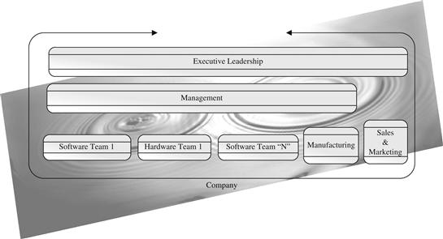
Figure 1-3 Problems radiate and impact the environment.[6]
Decrease the stress and the interruptions for a development team during their most productive programming hours within a normal work week, so that there is more focus and fewer mistakes.
Real-World Tidbit Underpinnings of Software Productivity[7]
“… developers imprisoned in noisy cubicles, those who had no defense against frequent interruptions, did poorly. How poorly? The numbers are breathtaking. The best quartile was 300% more productive than the lowest 25%. Yet privacy was the only difference between the groups.
Think about it—would you like 3× faster development?
It takes your developers 15 minutes, on average, to move from active perception of the office busyness to being totally and productively engaged in the cyberworld of coding. Yet a mere 11 minutes passes between interruptions for the average developer. Ever wonder why firmware costs so much? …”
“A Boss’s Quick-Start to Firmware Engineering,” J. Ganssle, http://www.ganssle.com/articles/abossguidepi.htm; Peopleware: Productive Projects & Teams, T. DeMarco and T. Lister, Dorset House Publishing, 2nd revised edn, 1999.
Another approach in the industry to avoid a schedule from slipping has been to throw more and more resources at a project. Throwing more resources ad-hoc at project tasks without proper planning, training, and team building is the surest way to hurt a team and guarantee a missed deadline. As indicated in Figure 1-4, productivity crashes with the more people there are on a project. A limit in the number of communication channels can happen through more than one smaller sub-teams, as long as:
• It makes sense for the embedded systems product being designed, i.e.:
• not dozens of developers and several line/project managers for a few MB of code;
• not when few have embedded systems experience and/or experience building the product;
• not for corporate empire-building! This results in costly project problems and delays = bad for business!
• In a healthy team environment:
• no secretiveness;
• no hackers;
• best practices and processes not ignored.
• Team members have sense of professional responsibility, alignment, and trust with each other, leadership, and the organization.
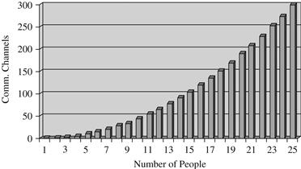
Figure 1-4 Too many people.[7]
So, ultimately what is recommended is Rule 3—teamwork! … teamwork! … teamwork! Get together with fellow team members to discuss the various process models and determine via consensus together what is what is the best “fit” for your particular team. Meaning, there is not yet “one” particular process that has been invented that is the right approach for “all” teams in the industry, or even “all” projects for one particular team. In fact, most likely what works for the team is some hybrid combination of a few models, and this model will need to be tuned according to the types of team members and how they function best, the project’s goals, and system requirements.
Then all team members, from junior to the most senior technical members of the team, as well as leadership, align together to come to an agreed consensus for a process model that will achieve business results (Rule 4—alignment behind leadership). Each team member then understands the big picture, the part each plays in it, and commits to the discipline to follow through. If along the way, it is discovered the process isn’t optimally working as expected, team members get together again. Openly and respectfully discuss the challenges and frustrations together in a constructive manner; then immediately tune and adjust the process, with team members each doing their part to improve software development efforts. Finally, do not forget Rule 5—strong ethics and integrity among each and every team member, to continue moving forward as agreed upon together towards success.
While more related to this discussion will be covered in the last chapter of this book, ultimately the most powerful way to meet project schedules, costs, and successfully take an embedded system solution to production is:
√ by shipping a very high quality product on-time
• Have a strong technical foundation (i.e., most of this text focuses on providing a strong technical foundation for understanding the major components of an embedded system design).
• Sacrifice fewer essential features in the first release.
• Start with a skeleton, then hang code off the skeleton.
• Do not overcomplicate the design!
• Systems integration, testing, and verification from day 1.
1.5 Summary
This chapter began by defining what an embedded system is, including in the definition the most complex and recent innovations in the market. It then defined what an embedded systems architecture is in terms of the sum of the various representations (structures) of a system. This chapter also introduced why the architectural approach is used as the approach to introducing embedded concepts in this book: because it presents a clear visual of what the system is, or could be, composed of and how these elements function. In addition, this approach can provide early indicators into what may and may not work in a system, and possibly improve the integrity of a system and lower costs via reusability. Finally, successfully completing an embedded design project and taking it to production requires:
Rule 1 More than technology
Rule 2 Discipline in following development processes and best practices
Rule 3 Teamwork
Rule 4 Alignment behind leadership
Rule 5 Strong ethics and integrity among each and every team member
Chapter 2, Know Your Standards, contains the first real-world examples of the book in reference to how industry standards play into an embedded design. Its purpose is to show the importance of knowing and understanding the standards associated with a particular device, and leveraging these standards to understand or create an embedded system’s architectural design.
Chapter 1: Problems
\1. Name three traditional or not-so-traditional definitions of embedded systems.
\2. In what ways do traditional assumptions apply and not apply to more recent complex embedded designs? Give four examples.
\3. [T/F] Embedded systems are all:
A. Medical devices.
B. Computer systems.
C. Very reliable.
D. All of the above.
E. None of the above.
\4. [a] Name and describe five different markets under which embedded systems commonly fall. [b] Provide examples of four devices in each market.
\5. Name and describe the four development models that most embedded projects are based upon.
\6. [a] What is the Embedded Systems Design and Development Lifecycle Model [draw it]? [b] What development models is this model based upon? [c] How many phases are in this model? [d] Name and describe each of its phases.
\7. Which of the stages below is not part of creating an architecture, phase 1 of the Embedded Systems Design and Development Lifecycle Model?
A. Understanding the architecture business cycle.
B. Documenting the architecture.
C. Maintaining the embedded system.
D. Having a strong technical foundation.
E. None of the above.
\8. Name five challenges commonly faced when designing an embedded system.
\9. What is the architecture of an embedded system?
\10. [T/F] Every embedded system has an architecture.
\11. [a] What is an element of the embedded system architecture? [b] Give four examples of architectural elements.
\12. What is an architectural structure?
\13. Name and define five types of structures.
\14. [a] Name at least three challenges in designing embedded systems. [b] How can an architecture resolve these challenges?
\15. [a] What is the Embedded Systems Model? [b] What structural approach does the Embedded Systems Model take? [c] Draw and define the layers of this model. [d] Why is this model introduced?
\16. Why is a modular architectural representation useful?
\17. All of the major elements within an embedded system fall under:
A. The hardware layer.
B. The system software layer.
C. The application software layer.
D. The hardware, system software, and application software layers.
E. A or D, depending on the device.
\18. Name six sources that can be used to gather embedded systems design information.
Chapter 9
Embedded Operating Systems
IN THIS CHAPTER
• Defining OS
• Discussing process management, scheduling, and intertask communication
• Introducing memory management at the OS level
• Discussing I/O management in OSs
An operating system (OS) is an optional part of an embedded device’s system software stack, meaning that not all embedded systems have one. OSs can be used on any processor (Instruction Set Architecture (ISA)) to which the OS has been ported. As shown in Figure 9-1, an OS either sits over the hardware, over the device driver layer, or over a BSP (Board Support Package, which will be discussed in Section 9.7).
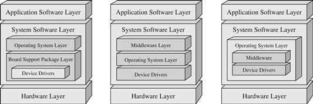
Figure 9-1 OSs and the Embedded Systems Model.
The OS is a set of software libraries that serves two main purposes in an embedded system: providing an abstraction layer for software on top of the OS to be less dependent on hardware, making the development of middleware and applications that sit on top of the OS easier, and managing the various system hardware and software resources to ensure the entire system operates efficiently and reliably. While embedded OSs vary in what components they possess, all OSs have a kernel at the very least. The kernel is a component that contains the main functionality of the OS, specifically all or some combination of features and their interdependencies, shown in Figures 9-2a–e, including:
• Process Management: how the OS manages and views other software in the embedded system (via processes—more in Section 9.2, Multitasking and Process Management). A subfunction typically found within process management is interrupt and error detection management. The multiple interrupts and/or traps generated by the various processes need to be managed efficiently, so that they are handled correctly and the processes that triggered them are properly tracked.
• Memory Management: the embedded system’s memory space is shared by all the different processes, so that access and allocation of portions of the memory space need to be managed (more in Section 9.3, Memory Management). Within memory management, other subfunctions such as security system management allow for portions of the embedded system sensitive to disruptions that can result in the disabling of the system, to remain secure from unfriendly, or badly written, higher-layer software.
• I/O System Management: I/O devices also need to be shared among the various processes and so, just as with memory, access and allocation of an I/O device need to be managed (more in Section 9.4, I/O and File System Management). Through I/O system management, file system management can also be provided as a method of storing and managing data in the forms of files.
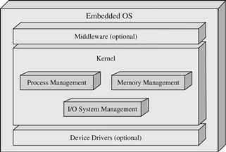
Figure 9-2a General OS model.
Figure 9-2b Kernel subsystem dependencies.
Figure 9-2c Kernel subsystem dependencies.
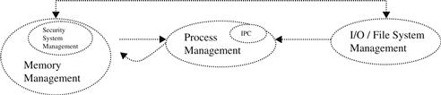
Figure 9-2d Kernel subsystem dependencies.
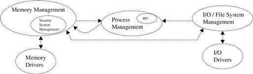
Figure 9-2e Kernel subsystem dependencies.
Because of the way in which an OS manages the software in a system, using processes, the process management component is the most central subsystem in an OS. All other OS subsystems depend on the process management unit.
Since all code must be loaded into main memory (random access memory (RAM) or cache) for the master CPU to execute, with boot code and data located in non-volatile memory (read-only memory (ROM), Flash, etc.), the process management subsystem is equally dependent on the memory management subsystem.
I/O management, for example, could include networking I/O to interface with the memory manager in the case of a network file system (NFS).
Outside the kernel, the Memory Management and I/O Management subsystems then rely on the device drivers, and vice-versa, to access the hardware.
Whether inside or outside an OS kernel, OSs also vary in what other system software components, such as device drivers and middleware, they incorporate (if any). In fact, most embedded OSs are typically based upon one of three models, the monolithic, layered, or microkernel (client/server) design. In general, these models differ according to the internal design of the OS’s kernel, as well as what other system software has been incorporated into the OS. In a monolithic OS, middleware and device driver functionality is typically integrated into the OS along with the kernel. This type of OS is a single executable file containing all of these components (see Figure 9-3).
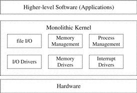
Figure 9-3 Monolithic OS block diagram.
Monolithic OSs are usually more difficult to scale down, modify, or debug than their other OS architecture counterparts, because of their inherently large, integrated, cross-dependent nature. Thus, a more popular algorithm, based upon the monolithic design, called the monolithic-modularized algorithm, has been implemented in OSs to allow for easier debugging, scalability, and better performance over the standard monolithic approach. In a monolithic-modularized OS, the functionality is integrated into a single executable file that is made up of modules, separate pieces of code reflecting various OS functionality. The embedded Linux OS is an example of a monolithic-based OS, whose main modules are shown in Figure 9-4. The Jbed RTOS, MicroC/OS-II, and PDOS are all examples of embedded monolithic OSs.
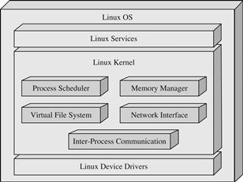
Figure 9-4 Linux OS block diagram.
In the layered design, the OS is divided into hierarchical layers (0, …, N), where upper layers are dependent on the functionality provided by the lower layers. Like the monolithic design, layered OSs are a single large file that includes device drivers and middleware (see Figure 9-5). While the layered OS can be simpler to develop and maintain than a monolithic design, the APIs (application program interfaces) provided at each layer create additional overhead that can impact size and performance. DOS-C (FreeDOS), DOS/eRTOS, and VRTX are all examples of a layered OS.
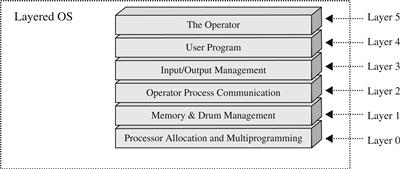
Figure 9-5 Layered OS block diagram.
An OS that is stripped down to minimal functionality, commonly only process and memory management subunits as shown in Figure 9-6, is called a client/server OS or a microkernel. (Note: A subclass of microkernels are stripped down even further to only process management functionality and are commonly referred to as nanokernels.) The remaining functionality typical of other kernel algorithms is abstracted out of the kernel, while device drivers, for instance, are usually abstracted out of a microkernel entirely, as shown in Figure 9-6. A microkernel also typically differs in its process management implementation over other types of OSs. This is discussed in more detail in Section 9.2.3 on Intertask Communication and Synchronization.
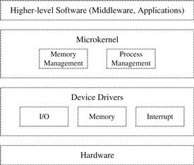
Figure 9-6 Microkernel-based OS block diagram.
The microkernel OS is typically a more scalable (modular) and debuggable design, since additional components can be dynamically added in. It is also more secure since much of the functionality is now independent of the OS, and there is a separate memory space for client and server functionality. It is also easier to port to new architectures. However, this model may be slower than other OS architectures, such as the monolithic, because of the communication paradigm between the microkernel components and other “kernel-like” components. Overhead is also added when switching between the kernel and the other OS components and non-OS components (relative to layered and monolithic OS designs). Most of the off-the-shelf embedded OSs—and there are at least a hundred of them—have kernels that fall under the microkernel category, including OS-9, C Executive, VxWorks, CMX-RTX, Nucleus Plus, and QNX.
9.1 What Is a Process?
To understand how OSs manage an embedded device’s hardware and software resources, the reader must first understand how an OS views the system. An OS differentiates between a program and the executing of a program. A program is simply a passive, static sequence of instructions that could represent a system’s hardware and software resources. The actual execution of a program is an active, dynamic event in which various properties change relative to time and the instruction being executed. A process (commonly referred to as a task in many embedded OSs) is created by an OS to encapsulate all the information that is involved in the executing of a program (stack, PC, source code, data, etc.). This means that a program is only part of a task, as shown in Figure 9-7.
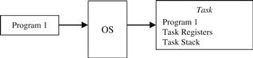
Figure 9-7 OS task.
Embedded OSs manage all embedded software using tasks, and can be either unitasking or multitasking. In unitasking OS environments, only one task can exist at any given time, whereas in a multitasking OS, multiple tasks are allowed to exist simultaneously. Unitasking OSs typically don’t require as complex a task management facility as a multitasking OS. In a multitasking environment, the added complexity of allowing multiple existing tasks requires that each process remain independent of the others and not affect any other without the specific programming to do so. This multitasking model provides each process with more security, which is not needed in a unitasking environment. Multitasking can actually provide a more organized way for a complex embedded system to function. In a multitasking environment, system activities are divided up into simpler, separate components, or the same activities can be running in multiple processes simultaneously, as shown in Figure 9-8.
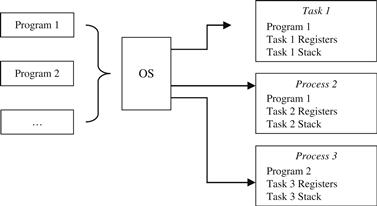
Figure 9-8 Multitasking OS.
Some multitasking OSs also provide threads (lightweight processes) as an additional, alternative means for encapsulating an instance of a program. Threads are created within the context of a task (meaning a thread is bound to a task) and, depending on the OS, the task can own one or more threads. A thread is a sequential execution stream within its task. Unlike tasks, which have their own independent memory spaces that are inaccessible to other tasks, threads of a task share the same resources (working directories, files, I/O devices, global data, address space, program code, etc.), but have their own PCs, stack, and scheduling information (PC, SP, stack, registers, etc.) to allow for the instructions they are executing to be scheduled independently. Since threads are created within the context of the same task and can share the same memory space, they can allow for simpler communication and coordination relative to tasks. This is because a task can contain at least one thread executing one program in one address space or can contain many threads executing different portions of one program in one address space (see Figure 9-9), needing no intertask communication mechanisms. This is discussed in more detail in Section 9.2.3 Intertask Communication and Synchronization. Also, in the case of shared resources, multiple threads are typically less expensive than creating multiple tasks to do the same work.
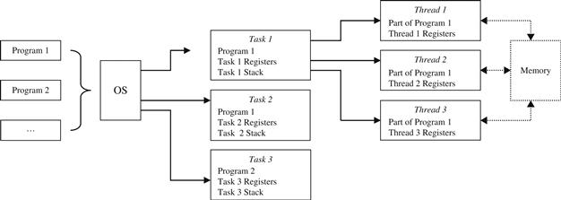
Figure 9-9 Tasks and threads.
Usually, programmers define a separate task (or thread) for each of the system’s distinct activities to simplify all the actions of that activity into a single stream of events, rather than a complex set of overlapping events. However, it is generally left up to the programmer as to how many tasks are used to represent a system’s activity and, if threads are available, if and how they are used within the context of tasks.
DOS-C is an example of a unitasking embedded OS, whereas VxWorks (Wind River), embedded Linux (Timesys), and Jbed (Esmertec) are examples of multitasking OSs. Even within multitasking OSs, the designs can vary widely. Traditional versions of VxWorks (i.e., 5.x and 6.x) have one type of task, each of which implements one “thread of execution,” whereas another VxWorks version called VxWorks653 is made up of a more complex multitasking scheme that integrates some combination of a module OS and instantiations of partition OSs. Timesys Linux has two types of tasks, the Linux fork and the Periodic task, whereas Jbed provides six different types of tasks that run alongside threads: OneshotTimer Task (a task that is run only once), PeriodicTimer Task (a task that is run after a particular set time interval), HarmonicEvent Task (a task that runs alongside a Periodic timer task), JoinEvent Task (a task that is set to run when an associated task completes), InterruptEvent Task (a task that is run when a hardware interrupt occurs), and the UserEvent Task (a task that is explicitly triggered by another task). More details on the different types of tasks are given in the next section.
9.2 Multitasking and Process Management
Multitasking OSs require an additional mechanism over unitasking OSs to manage and synchronize tasks that can exist simultaneously. This is because even when an OS allows multiple tasks to coexist, one master processor on an embedded board can only execute one task or thread at any given time. As a result, multitasking embedded OSs must find some way of allocating each task a certain amount of time to use the master CPU and switching the master processor between the various tasks. It is by accomplishing this through task implementation, scheduling, synchronization, and intertask communication mechanisms that an OS successfully gives the illusion of a single processor simultaneously running multiple tasks (see Figure 9-10).
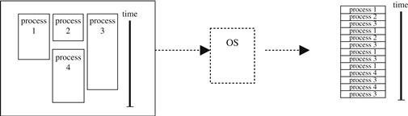
Figure 9-10 Interleaving tasks.
9.2.1 PROCESS IMPLEMENTATION
In multitasking embedded OSs, tasks are structured as a hierarchy of parent and child tasks, and when an embedded kernel starts up only one task exists (as shown in Figure 9-11). It is from this first task that all others are created. (Note: The first task is also created by the programmer in the system’s initialization code, which will be discussed in more detail in Chapter 12.)
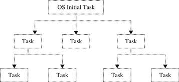
Figure 9-11 Task hierarchy.
Task creation in embedded OSs is primarily based upon two models, fork/exec (which derived from the IEEE/ISO POSIX 1003.1 standard) and spawn (which is derived from fork/exec). Since the spawn model is based upon the fork/exec model, the methods of creating tasks under both models are similar. All tasks create their child tasks through fork/exec or spawn system calls. After the system call, the OS gains control and creates the Task Control Block (TCB), also referred to as a Process Control Block (PCB) in some OSs, that contains OS control information, such as task ID, task state, task priority, and error status, and CPU context information, such as registers, for that particular task. At this point, memory is allocated for the new child task, including for its TCB, any parameters passed with the system call and the code to be executed by the child task. After the task is set up to run, the system call returns and the OS releases control back to the main program.
The main difference between the fork/exec and spawn models is how memory is allocated for the new child task. Under the fork/exec model, as shown in Figure 9-12, the “fork” call creates a copy of the parent task’s memory space in what is allocated for the child task, thus allowing the child task to inherit various properties, such as program code and variables, from the parent task. Because the parent task’s entire memory space is duplicated for the child task, two copies of the parent task’s program code are in memory—one for the parent and one belonging to the child. The “exec” call is used to explicitly remove from the child task’s memory space any references to the parent’s program and sets the new program code belonging to the child task to run.
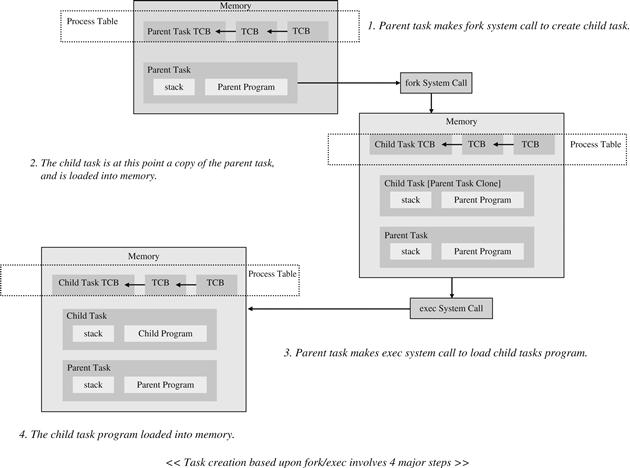
Figure 9-12 Fork/exec process creation.
The spawn model, on the other hand, creates an entirely new address space for the child task. The spawn system call allows for the new program and arguments to be defined for the child task. This allows for the child task’s program to be loaded and executed immediately at the time of its creation (see Figure 9-13).
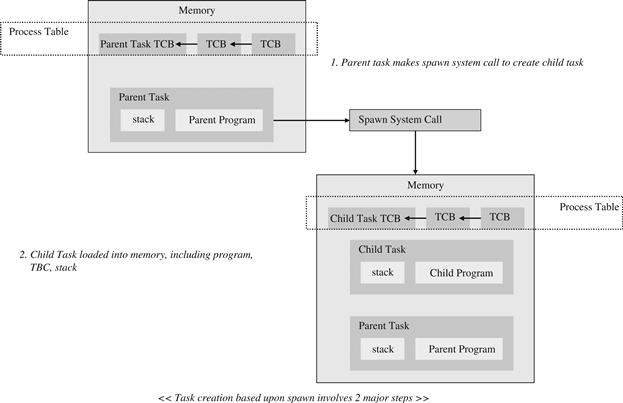
Figure 9-13 Spawn process creation.
Both process creation models have their strengths and drawbacks. Under the spawn approach, there are no duplicate memory spaces to be created and destroyed, and then new space allocated, as is the case with the fork/exec model. The advantages of the fork/exec model, however, include the efficiency gained by the child task inheriting properties from the parent task, and then having the flexibility to change the child task’s environment afterwards. In Examples 1, 2, and 3, real-world embedded OSs are shown along with their process creation techniques.
Example 1: Creating a Task in VxWorks[1]
The two major steps of spawn task creation form the basis of creating tasks in VxWorks. The VxWorks system called “taskSpawn” is based upon the POSIX spawn model, and it is what creates, initializes, and activates a new (child) task.
int taskSpawn(
{Task Name},
{Task Priority 0-255, related to scheduling; this will be discussed in the next section},
{Task Options - VX_FP_TASK, execute with floating point coprocessor
VX_PRIVATE_ENV, execute task with private environment
VX_UNBREAKABLE, disable breakpoints for task
VX_NO_STACK_FILL, do not fill task stack with 0xEE}
{Stack Size}
{Task address of entry point of program in memory - initial PC value}
{Up to 10 arguments for task program entry routine})
After the spawn system call, an image of the child task (including TCB, stack, and program) is allocated into memory. Below is a pseudocode example of task creation in the VxWorks RTOS where a parent task “spawns” a child task software timer.
Task Creation VxWorks Pseudocode
// parent task that enables software timer
void parentTask(void)
{
…
if sampleSoftware Clock NOT running {
/"newSWClkId" is a unique integer value assigned by kernel when task is created newSWClkId = taskSpawn ("sampleSoftwareClock", 255, VX_NO_STACK_FILL, 3000,
(FUNCPTR) minuteClock, 0, 0, 0, 0, 0, 0, 0, 0, 0, 0);
….
}
// child task program Software Clock
void minuteClock (void) {
integer seconds;
while (softwareClock is RUNNING) {
seconds = 0;
while (seconds < 60) {
seconds = seconds + 1;
}
…
}
Example 2: Jbed RTOS and Task Creation[2]
In Jbed, there is more than one way to create a task, because in Java there is more than one way to create a Java thread—and in Jbed, tasks are extensions of Java threads. One of the most common methods of creating a task in Jbed is through the “task” routines, one of which is:
public Task(long duration,
long allowance,
long deadline,
RealtimeEvent event)
Throws AdmissionFailure
Task creation in Jbed is based upon a variation of the spawn model, called spawn threading. Spawn threading is spawning, but typically with less overhead and with tasks sharing the same memory space. Below is a pseudocode example of task creation of a Oneshot task, one of Jbed’s six different types of tasks, in the Jbed RTOS where a parent task “spawns” a child task software timer that runs only one time.
Task Creation Jbed Pseudocode
// Define a class that implements the Runnable interface for the software clock
public class ChildTask implements Runnable{
// child task program Software Clock
public void run () {
integer seconds;
while (softwareClock is RUNNING) {
seconds = 0;
while (seconds < 60) {
seconds = seconds + 1;
}
…
}
}
// parent task that enables software timer
void parentTask(void)
{
…
if sampleSoftware Clock NOT running {
try{
DURATION,
ALLOWANCE,
DEADLINE,
OneshotTimer);
}catch(AdmissionFailure error){
Print Error Message ("Task creation failed");
}
}
….
}
The creation and initialization of the Task object is the Jbed (Java) equivalent of a TCB. The task object, along with all objects in Jbed, is located in Jbed’s heap (in Java, there is only one heap for all objects). Each task in Jbed is also allocated its own stack to store primitive data types and object references.
Example 3: Embedded Linux and Fork/Exec[3]
In embedded Linux, all process creation is based upon the fork/exec model:
int fork (void) void exec (…)
In Linux, a new “child” process can be created with the fork system call (shown above), which creates an almost identical copy of the parent process. What differentiates the parent task from the child is the process ID—the process ID of the child process is returned to the parent, whereas a value of “0” is what the child process believes its process ID to be.
#include <sys/types.h>
#include <unistd.h>
void program(void)
{
processId child_processId;
/* create a duplicate: child process */
child_processId = fork();
if (child_processId == −1) {
ERROR;
}
else if (child_processId == 0) {
run_childProcess();
}
else {
run_parentParent();
}
The exec function call can then be used to switch to the child’s program code.
int program (char* program, char** arg_list)
{
processed child_processId;
/* Duplicate this process */
child_processId = fork ();
if (child_pId ! = 0)
/* This is the parent process */
return child_processId;
else
{
/* Execute PROGRAM, searching for it in the path */
execvp (program, arg_list);
/* execvp returns only if an error occurs */
fprintf (stderr, "Error in execvp\n");
abort (); }
}
}
Tasks can terminate for a number of different reasons, such as normal completion, hardware problems such as lack of memory, and software problems such as invalid instructions. After a task has been terminated, it must be removed from the system so that it doesn’t waste resources, or even keep the system in limbo. In deleting tasks, an OS deallocates any memory allocated for the task (TCBs, variables, executed code, etc.). In the case of a parent task being deleted, all related child tasks are also deleted or moved under another parent, and any shared system resources are released (see Figure 9-14a).
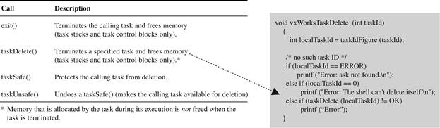
Figure 9-14a VxWorks and Spawn task deleted.[4]
When a task is deleted in VxWorks, other tasks are not notified and any resources such as memory allocated to the task are not freed—it is the responsibility of the programmer to manage the deletion of tasks using the subroutines below.
In Linux, processes are deleted with the void exit(int status) system call, which deletes the process and removes any kernel references to process (updates flags, removes processes from queues, releases data structures, updates parent-child relationships, etc.). Under Linux, child processes of a deleted process become children of the main init parent process (see Figure 9-14b).
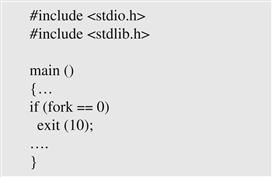
Figure 9-14b Embedded Linux and fork/exec task deleted.[3]
Because Jbed is based upon the Java model, a garbage collector (GC) is responsible for deleting a task and removing any unused code from memory once the task has stopped running. Jbed uses a non-blocking mark-and-sweep garbage collection algorithm, which marks all objects still being used by the system and deletes (sweeps) all unmarked objects in memory.
In addition to creating and deleting tasks, an OS typically provides the ability to suspend a task (meaning temporarily blocking a task from executing) and resume a task (meaning any blocking of the task’s ability to execute is removed). These two additional functions are provided by the OS to support task states. A task’s state is the activity (if any) that is going on with that task once it has been created, but has not been deleted. OSs usually define a task as being in one of three states:
• READY: the process is ready to be executed at any time, but is waiting for permission to use the CPU.
• RUNNING: the process has been given permission to use the CPU, and can execute.
• BLOCKED or WAITING: the process is waiting for some external event to occur before it can be “ready” to “run.”
OSs usually implement separate READY and BLOCKED/WAITING “queues” containing tasks (their TCBs) that are in the relative state (see Figure 9-15). Only one task at any one time can be in the RUNNING state, so no queue is needed for tasks in the RUNNING state.
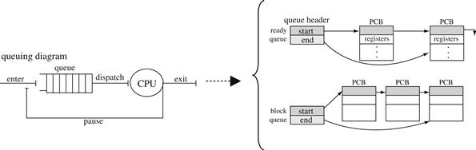
Figure 9-15 Task states and queues.[4]
Based upon these three states (READY, BLOCKED, and RUNNING), most OSs have some process state transition model similar to the state diagram in Figure 9-16. In this diagram, the “New” state indicates a task that has been created, and the “Exit” state is a task that has terminated (suspended or stopped running). The other three states are defined above (READY, RUNNING, and BLOCKED). The state transitions (according to Figure 9-16) are New → READY (where a task has entered the ready queue and can be scheduled for running), READY → RUNNING (based on the kernel’s scheduling algorithm, the task has been selected to run), RUNNING → READY (the task has finished its turn with the CPU and is returned to the ready queue for the next time around), RUNNING → BLOCKED (some event has occurred to move the task into the blocked queue, not to run until the event has occurred or been resolved), and BLOCKED → READY (whatever blocked task was waiting for has occurred and task is moved back to the ready queue).
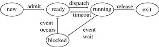
Figure 9-16 Task state diagram.[2]
When a task is moved from one of the queues (READY or BLOCKED/WAITING) into the RUNNING state, it is called a context switch. Examples 4, 5, and 6 give real-world examples of OSs and their state management schemes.
Example 4: VxWorks Wind Kernel and States[5]
Other than the RUNNING state, VxWorks implements nine variations of the READY and BLOCKED/WAITING states, as shown in the following table and state diagram.
| State | Description |
|---|---|
| STATE + 1 | The state of the task with an inherited priority |
| READY | Task in READY state |
| DELAY | Task in BLOCKED state for a specific time period |
| SUSPEND | Task is BLOCKED usually used for debugging |
| DELAY + S | Task is in two states: DELAY & SUSPEND |
| PEND | Task in BLOCKED state due to a busy resource |
| PEND + S | Task is in two states: PEND & SUSPEND |
| PEND + T | Task is in PEND state with a timeout value |
| PEND + S + T | Task is in two states: PEND state with a timeout value and SUSPEND |
Under VxWorks, separate ready, pending, and delay state queues exist to store the TCB information of a task that is within that respective state (see Figure 9-17a2).
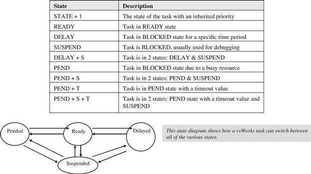
Figure 9-17a1 State diagram for VxWorks tasks.[5]
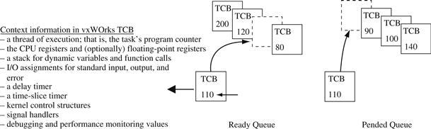
Figure 9-17a2 VxWorks tasks and queues.[4]
A task’s TCB is modified and is moved from queue to queue when a context switch occurs. When the Wind kernel context switches between two tasks, the information of the task currently running is saved in its TCB, while the TCB information of the new task to be executed is loaded for the CPU to begin executing. The Wind kernel contains two types of context switches: synchronous, which occurs when the running task blocks itself (through pending, delaying, or suspending), and asynchronous, which occurs when the running task is blocked due to an external interrupt.
Example 5: Jbed Kernel and States[6]
In Jbed, some states of tasks are related to the type of task, as shown in the table and state diagrams below. Jbed also uses separate queues to hold the task objects that are in the various states.
| State | Description |
|---|---|
| RUNNING | For all types of tasks, task is currently executing |
| READY | For all types of tasks, task in READY state |
| STOP | In Oneshot tasks, task has completed execution |
| AWAIT TIME | For all types of tasks, task in BLOCKED state for a specific time period |
| AWAIT EVENT | In Interrupt and Joined tasks, BLOCKED while waiting for some event to occur |
Example 6: Embedded Linux and States
In Linux, RUNNING combines the traditional READY and RUNNING states, while there are three variations of the BLOCKED state.
| State | Description |
|---|---|
| RUNNING | Task is in either the RUNNING or READY state |
| WAITING | Task in BLOCKED state waiting for a specific resource or event |
| STOPPED | Task is BLOCKED, usually used for debugging |
| ZOMBIE | Task is BLOCKED and no longer needed |
Under Linux, a process’s context information is saved in a PCB called the task_struct shown in Figure 9-17c2. Shown boldface in the figure is an entry in the task_struct containing a Linux process’s state. In Linux there are separate queues that contain the task_struct (PCB) information for the process with that respective state.
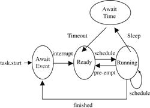
Figure 9-17b1 State diagram for Jbed Interrupt tasks.[6] This state diagram shows some possible states for Interrupt tasks. Basically, an interrupt task is in an Await Event state until a hardware interrupt occurs—at which point the Jbed scheduler moves an Interrupt task into the READY state to await its turn to run.
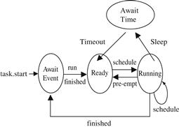
Figure 9-17b2 State diagram for Jbed Joined tasks.[6] This state diagram shows some possible states for Joined tasks. Like the Interrupt task, the Joined task is in an Await Event state until an associated task has finished running—at which point the Jbed scheduler moves a Joined task into the READY state to await its turn to run. At any time, the Joined task can enter a timed waiting period.
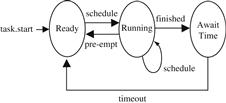
Figure 9-17b3 State diagram for Periodic tasks.[6] This state diagram shows some possible states for Periodic tasks. A Periodic task runs continuously at certain intervals and gets moved into the Await Time state after every run to await that interval before being put into the ready state.
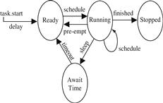
Figure 9-17b4 State diagram for Oneshot tasks.[6] This state diagram shows some possible states for Oneshot tasks. A Oneshot task can either run once and then end (stop) or be blocked for a period of time before actually running.
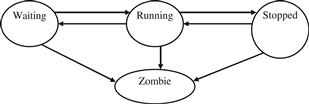
Figure 9-17c1 State diagram for Linux tasks.[3] This state diagram shows how a Linux task can switch between all of the various states.
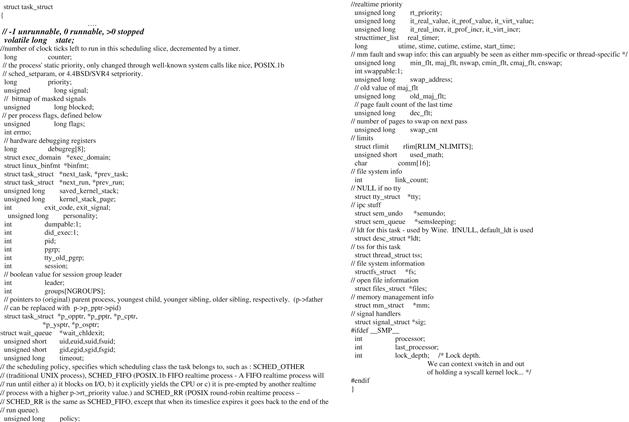
Figure 9-17c2 Task structure.[15]
9.2.2 PROCESS SCHEDULING
In a multitasking system, a mechanism within an OS, called a scheduler (shown in Figure 9-18), is responsible for determining the order and the duration of tasks to run on the CPU. The scheduler selects which tasks will be in what states (READY, RUNNING, or BLOCKED), as well as loading and saving the TCB information for each task. On some OSs the same scheduler allocates the CPU to a process that is loaded into memory and ready to run, while in other OSs a dispatcher (a separate scheduler) is responsible for the actual allocation of the CPU to the process.
Figure 9-18 OS Block diagram and the scheduler.[3]
There are many scheduling algorithms implemented in embedded OSs, and every design has its strengths and tradeoffs. The key factors that impact the effectiveness and performance of a scheduling algorithm include its response time (time for scheduler to make the context switch to a ready task and includes waiting time of task in ready queue), turnaround time (the time it takes for a process to complete running), overhead (the time and data needed to determine which tasks will run next), and fairness (what are the determining factors as to which processes get to run). A scheduler needs to balance utilizing the system’s resources, keeping the CPU, I/O, as busy as possible, with task throughput, processing as many tasks as possible in a given amount of time. Especially in the case of fairness, the scheduler has to ensure that task starvation, where a task never gets to run, doesn’t occur when trying to achieve a maximum task throughput.
In the embedded OS market, scheduling algorithms implemented in embedded OSs typically fall under two approaches: non-pre-emptive and pre-emptive scheduling. Under non-pre-emptive scheduling, tasks are given control of the master CPU until they have finished execution, regardless of the length of time or the importance of the other tasks that are waiting. Scheduling algorithms based upon the non-pre-emptive approach include:
• First Come First Served (FCFS)/Run-To-Completion, where tasks in the READY queue are executed in the order they entered the queue and where these tasks are run until completion when they are READY to be run (see Figure 9-19). Here, non- pre-emptive means there is no BLOCKED queue in an FCFS scheduling design. The response time of a FCFS algorithm is typically slower than other algorithms (i.e., especially if longer processes are in front of the queue requiring that other processes wait their turn), which then becomes a fairness issue since short processes at the end of the queue get penalized for the longer ones in front. With this design, however, starvation is not possible.
Figure 9-19 FCFS scheduling.
• Shortest Process Next (SPN)/Run-To-Completion, where tasks in the READY queue are executed in the order in which the tasks with the shortest execution time are executed first (see Figure 9-20). The SPN algorithm has faster response times for shorter processes. However, then the longer processes are penalized by having to wait until all the shorter processes in the queue have run. In this scenario, starvation can occur to longer processes if the ready queue is continually filled with shorter processes. The overhead is higher than that of FCFS, since the calculation and storing of run times for the processes in the ready queue must occur.
Figure 9-20 Shortest process next scheduling.
• Co-operative, where the tasks themselves run until they tell the OS when they can be context switched (for I/O, etc.). This algorithm can be implemented with the FCFS or SPN algorithms, rather than the run-to-completion scenario, but starvation could still occur with SPN if shorter processes were designed not to “cooperate,” for example (see Figure 9-21).
Figure 9-21 Cooperative scheduling.
Non-pre-emptive algorithms can be riskier to support since an assumption must be made that no one task will execute in an infinite loop, shutting out all other tasks from the master CPU. However, OSs that support non-pre-emptive algorithms don’t force a context-switch before a task is ready, and the overhead of saving and restoration of accurate task information when switching between tasks that have not finished execution is only an issue if the non-pre-emptive scheduler implements a cooperative scheduling mechanism. In pre-emptive scheduling, on the other hand, the OS forces a context-switch on a task, whether or not a running task has completed executing or is cooperating with the context switch. Common scheduling algorithms based upon the pre-emptive approach include: Round Robin/FIFO (First In First Out) scheduling, priority (pre-emptive) scheduling, and EDF (Earliest Deadline First)/Clock Driven scheduling.
• Round Robin/FIFO Scheduling. The Round Robin/FIFO algorithm implements a FIFO queue that stores ready processes (processes ready to be executed). Processes are added to the queue at the end of the queue and are retrieved to be run from the start of the queue. In the FIFO system, all processes are treated equally regardless of their workload or interactivity. This is mainly due to the possibility of a single process maintaining control of the processor, never blocking to allow other processes to execute.
Under round-robin scheduling, each process in the FIFO queue is allocated an equal time slice (the duration each process has to run), where an interrupt is generated at the end of each of these intervals to start the pre-emption process. (Note: Scheduling algorithms that allocate time slices, are also referred to as time-sharing systems.) The scheduler then takes turns rotating among the processes in the FIFO queue and executing the processes consecutively, starting at the beginning of the queue. New processes are added to the end of the FIFO queue, and if a process that is currently running isn’t finished executing by the end of its allocated time slice, it is pre-empted and returned to the back of the queue to complete executing the next time its turn comes around. If a process finishes running before the end of its allocated time slice, the process voluntarily releases the processor, and the scheduler then assigns the next process of the FIFO queue to the processor (see Figure 9-22).
Figure 9-22 Round Robin/FIFO scheduling.[7]
While Round Robin/FIFO scheduling ensures the equal treatment of processes, drawbacks surface when various processes have heavier workloads and are constantly pre-empted, thus creating more context switching overhead. Another issue occurs when processes in the queue are interacting with other processes (such as when waiting for the completion of another process for data) and are continuously pre-empted from completing any work until the other process of the queue has finished its run. The throughput depends on the time slice. If the time slice is too small, then there are many context switches, while too large a time slice isn’t much different from a non-pre-emptive approach, like FCFS. Starvation is not possible with the round-robin implementation.
• Priority (Pre-Emptive) Scheduling. The priority pre-emptive scheduling algorithm differentiates between processes based upon their relative importance to each other and the system. Every process is assigned a priority, which acts as an indicator of orders of precedence within the system. The processes with the highest priority always pre-empt lower priority processes when they want to run, meaning a running task can be forced to block by the scheduler if a higher priority task becomes ready to run. Figure 9-23 shows three tasks (1, 2, and 3, where task 1 is the lowest priority task and task 3 is the highest), and task 3 pre-empts task 2 and task 2 pre-empts task 1. While this scheduling method resolves some of the problems associated with round-robin/FIFO scheduling in dealing with processes that interact or have varying workloads, new problems can arise in priority scheduling including:
• Process starvation: a continuous stream of high priority processes keep lower priority processes from ever running. Typically resolved by aging lower priority processes (as these processes spend more time on queue, increase their priority levels).
• Priority inversion: higher priority processes may be blocked waiting for lower priority processes to execute, and processes with priorities in between have a higher priority in running, thus the lower priority as well as higher priority processes don’t run (see Figure 9-24).
Figure 9-23 Pre-emptive priority scheduling.[8]
Figure 9-24 Priority inversion.[8]
• How to determine the priorities of various processes. Typically, the more important the task, the higher the priority it should be assigned. For tasks that are equally important, one technique that can be used to assign task priorities is the Rate Monotonic Scheduling (RMS) scheme, in which tasks are assigned a priority based upon how often they execute within the system. The premise behind this model is that, given a pre-emptive scheduler and a set of tasks that are completely independent (no shared data or resources) and are run periodically (meaning run at regular time intervals), the more often a task is executed within this set, the higher its priority should be. The RMS Theorem says that if the above assumptions are met for a scheduler and a set of “n” tasks, all timing deadlines will be met if the inequality ΣE**i/T**i ≤ n(21/n – 1) is verified, where i is the Periodic task, n is the number of Periodic tasks, T**i is the execution period of task i, E**i is the worst-case execution time of task i, and E**i/T**i is the fraction of CPU time required to execute task i. So, given two tasks that have been prioritized according to their periods, where the shortest period task has been assigned the highest priority, the “n(21/n – 1)” portion of the inequality would equal approximately 0.828, meaning the CPU utilization of these tasks should not exceed about 82.8% in order to meet all hard deadlines. For 100 tasks that have been prioritized according to their periods, where the shorter period tasks have been assigned the higher priorities, CPU utilization of these tasks should not exceed approximately 69.6% (100 * (21/100 – 1)) in order to meet all deadlines.
Real-World Advice To Benefit Most from a Fixed-Priority Pre-Emptive OS
Algorithms for assigning priorities to OS tasks are typically classified as fixed-priority where tasks are assigned priorities at design time and do not change through the lifecycle of the task, dynamic-priority where priorities are assigned to tasks at runtime, or some combination of both algorithms. Many commercial OSs typically support only the fixed-priority algorithms, since it is the least complex scheme to implement. The key to utilizing the fixed-priority scheme is:
• To assign the priorities of tasks according to their periods, so that the shorter the periods, the higher the priorities.
• To assign priorities using a fixed-priority algorithm (like the Rate Monotonic Algorithm, the basis of RMS) to assign fixed priorities to tasks and as a tool to quickly to determine if a set of tasks is schedulable.
• To understand that in the case when the inequality of a fixed-priority algorithm, like RMS, is not met, an analysis of the specific task set is required. RMS is a tool that allows for assuming that deadlines would be met in most cases if the total CPU utilization is below the limit (“most” cases meaning there are tasks that are not schedulable via any fixed-priority scheme). It is possible for a set of tasks to still be schedulable in spite of having a total CPU utilization above the limit given by the inequality. Thus, an analysis of each task’s period and execution time needs to be done in order to determine if the set can meet required deadlines.
• To realize that a major constraint of fixed-priority scheduling is that it is not always possible to completely utilize the master CPU 100%. If the goal is 100% utilization of the CPU when using fixed priorities, then tasks should be assigned harmonic periods, meaning a task’s period should be an exact multiple of all other tasks with shorter periods.
Based on the article “Introduction to Rate Monotonic Scheduling,” M. Barr, Embedded Systems Programming, February 2002.
• EDF/Clock Driven Scheduling. As shown in Figure 9-25, the EDF/Clock Driven algorithm schedules priorities to processes according to three parameters: frequency (number of times a process is run), deadline (when processes execution needs to be completed), and duration (time it takes to execute the process). While the EDF algorithm allows for timing constraints to be verified and enforced (basically guaranteed deadlines for all tasks), the difficulty is defining an exact duration for various processes. Usually, an average estimate is the best that can be done for each process.
Figure 9-25 EDF scheduling.[2]
Pre-Emptive Scheduling and the Real-Time Operating System (RTOS)
One of the biggest differentiators between the scheduling algorithms implemented within embedded OSs is whether the algorithm guarantees its tasks will meet execution time deadlines. If tasks always meet their deadlines (as shown in the first two graphs in Figure 9-26) and related execution times are predictable (deterministic), the OS is referred to as an RTOS.
Figure 9-26 OSs and deadlines.[4]
Pre-emptive scheduling must be one of the algorithms implemented within RTOS schedulers, since tasks with real-time requirements have to be allowed to pre-empt other tasks. RTOS schedulers also make use of their own array of timers, ultimately based upon the system clock, to manage and meet their hard deadlines.
Whether an RTOS or a non-RTOS in terms of scheduling, all will vary in their implemented scheduling schemes. For example, VxWorks (Wind River) is a priority-based and round-robin scheme, Jbed (Esmertec) is an EDF scheme, and Linux (Timesys) is a priority-based scheme. Examples 7, 8, and 9 examine further the scheduling algorithms incorporated into these embedded off-the-shelf OSs.
Example 7: VxWorks Scheduling
The Wind scheduler is based upon both pre-emptive priority and round-robin real-time scheduling algorithms. As shown in Figure 9-27a1, round-robin scheduling can be teamed with pre-emptive priority scheduling to allow for tasks of the same priority to share the master processor, as well as allow higher priority tasks to pre-empt for the CPU.
Figure 9-27a1 Pre-emptive priority scheduling augmented with round-robin scheduling.[7]
Without round-robin scheduling, tasks of equal priority in VxWorks would never pre-empt each other, which can be a problem if a programmer designs one of these tasks to run in an infinite loop. However, the pre-emptive priority scheduling allows VxWorks its real-time capabilities, since tasks can be programmed never to miss a deadline by giving them the higher priorities to pre-empt all other tasks. Tasks are assigned priorities via the “taskSpawn” command at the time of task creation:
int taskSpawn(
{Task Name},
{Task Priority 0-255, related to scheduling and will be discussed in the next section},
{Task Options – VX_FP_TASK, execute with floating point coprocessor
VX_PRIVATE_ENV, execute task with private environment
VX_UNBREAKABLE, disable breakpoints for task
VX_NO_STACK_FILL, do not fill task stack with 0xEE}
{Task address of entry point of program in memory - initial PC value}
{Up to 10 arguments for task program entry routine})
Example 8: Jbed and EDF Scheduling
Under the Jbed RTOS, all six types of tasks have the three variables—“duration,” “allowance,” and “deadline”—when the task is created for the EDF scheduler to schedule all tasks, as shown in the method (Java subroutine) calls below.
public Task(
long duration,
long allowance,
long deadline,
RealtimeEvent event)
Throws AdmissionFailure
Public Task (java.lang.String name,
long duration,
long allowance,
long deadline,
RealtimeEvent event)
Throws AdmissionFailure
Public Task (java.lang.Runnable target,
java.lang.String name,
long duration,
long allowance,
long deadline,
RealtimeEvent event)
Throws AdmissionFailure
Example 9: TimeSys Embedded Linux Priority-Based Scheduling
As shown in Figure 9-27b1, the embedded Linux kernel has a scheduler that is made up of four modules:[9]
• System call interface module: acts as the interface between user processes and any functionality explicitly exported by the kernel.
• Scheduling policy module: determines which processes have access to the CPU.
• Architecture specific scheduler module: an abstraction layer that interfaces with the hardware (i.e., communicating with CPU and the memory manager to suspend or resume processes).
• Architecture independent scheduler module: an abstraction layer that interfaces between the scheduling policy module and the architecture specific module.
Figure 9-27b1 Embedded Linux block diagram.[9]
The scheduling policy module implements a “priority-based” scheduling algorithm. While most Linux kernels and their derivatives are non-pre-emptable, have no rescheduling, and are not real-time, Timesys’ Linux scheduler is priority-based, but has been modified to allow for real-time capabilities. Timesys has modified the traditional Linux’s standard software timers, which are too coarsely grained to be suitable for use in most real-time applications because they rely on the kernel’s jiffy timer, and implements high-resolution clocks and timers based on a hardware timer. The scheduler maintains a table listing all of the tasks within the entire system and any state information associated with the tasks. Under Linux, the total number of tasks allowed is only limited to the size of physical memory available. A dynamically allocated linked list of a task structure, whose fields that are relevant to scheduling are highlighted in Figure 9-27b2, represents all tasks in this table.
Figure 9-27b2 Task structure.[15]
After a process has been created in Linux, through the fork or fork/exec commands, for instance, its priority is set via the setpriority command.
int setpriority(int which, int who, int prio);
which = PRIO_PROCESS, PRIO_PGRP, or PRIO_USER_
who = interpreted relative to which
prio = priority value in the range −20 to 20
9.2.3 INTERTASK COMMUNICATION AND SYNCHRONIZATION
Different tasks in an embedded system typically must share the same hardware and software resources or may rely on each other in order to function correctly. For these reasons, embedded OSs provide different mechanisms that allow for tasks in a multitasking system to intercommunicate and synchronize their behavior so as to coordinate their functions, avoid problems, and allow tasks to run simultaneously in harmony.
Embedded OSs with multiple intercommunicating processes commonly implement interprocess communication (IPC) and synchronization algorithms based upon one or some combination of memory sharing, message passing, and signaling mechanisms.
With the shared data model shown in Figure 9-28, processes communicate via access to shared areas of memory in which variables modified by one process are accessible to all processes.
Figure 9-28 Memory sharing.
While accessing shared data as a means to communicate is a simple approach, the major issue of race conditions can arise. A race condition occurs when a process that is accessing shared variables is pre-empted before completing a modification access, thus affecting the integrity of shared variables. To counter this issue, portions of processes that access shared data, called critical sections, can be earmarked for mutual exclusion (or Mutex for short). Mutex mechanisms allow shared memory to be locked up by the process accessing it, giving that process exclusive access to shared data. Various mutual exclusion mechanisms can be implemented not only for coordinating access to shared memory, but for coordinating access to other shared system resources as well. Mutual exclusion techniques for synchronizing tasks that wish to concurrently access shared data can include:
• Processor-assisted locks for tasks accessing shared data that are scheduled such that no other tasks can pre-empt them; the only other mechanisms that could force a context switch are interrupts. Disabling interrupts while executing code in the critical section would avoid a race condition scenario if the interrupt handlers access the same data. Figure 9-29 demonstrates this processor-assisted lock of disabling interrupts as implemented in VxWorks. VxWorks provides an interrupt locking and unlocking function for users to implement in tasks. Another possible processor-assisted lock is the “test-and-set-instruction” mechanism (also referred to as the condition variable scheme). Under this mechanism, the setting and testing of a register flag (condition) is an atomic function, a process that cannot be interrupted, and this flag is tested by any process that wants to access a critical section. In short, both the interrupt disabling and the condition variable type of locking schemes guarantee a process exclusive access to memory, where nothing can pre-empt the access to shared data and the system cannot respond to any other event for the duration of the access.
Figure 9-29 VxWorks processor-assisted locks.[10]
• Semaphores, which can be used to lock access to shared memory (mutual exclusion) and also can be used to coordinate running processes with outside events (synchronization). The semaphore functions are atomic functions, and are usually invoked through system calls by the process. Example 10 demonstrates semaphores provided by VxWorks.
Example 10: VxWorks Semaphores
VxWorks defines three types of semaphores:
• Binary semaphores are binary (0 or 1) flags that can be set to be available or unavailable. Only the associated resource is affected by the mutual exclusion when a binary semaphore is used as a mutual exclusion mechanism (whereas processor assisted locks, for instance, can affect other unrelated resources within the system). A binary semaphore is initially set = 1 (full) to show the resource is available. Tasks check the binary semaphore of a resource when wanting access and, if available, then take the associated semaphore when accessing a resource (setting the binary semaphore = 0), and then give it back when finishing with a resource (setting the binary semaphore = 1). When a binary semaphore is used for task synchronization, it is initially set equal to 0 (empty), because it acts as an event other tasks are waiting for. Other tasks that need to run in a particular sequence then wait (block) for the binary semaphore to be equal to 1 (until the event occurs) to take the semaphore from the original task and set it back to 0. The VxWorks pseudocode example below demonstrates how binary semaphores can be used in VxWorks for task synchronization.
#include "VxWorks.h"
#include "semLib.h"
#include "arch/arch/ivarch.h" /* replace arch with architecture type */
SEM_ID syncSem; /* ID of sync semaphore */
init (int someIntNum)
{
/* connect interrupt service routine */
intConnect (INUM_TO_IVEC (someIntNum), eventInterruptSvcRout, 0);
/* create semaphore */
syncSem = semBCreate (SEM_Q_FIFO, SEM_EMPTY);
/* spawn task used for synchronization. */
taskSpawn ("sample", 100, 0, 20000, task1, 0,0,0,0,0,0,0,0,0,0);
}
task1 (void)
{
…
semTake (syncSem, WAIT_FOREVER); /* wait for event to occur */
printf ("task 1 got the semaphore\n");
… /* process event */
}
eventInterruptSvcRout (void)
{
…
semGive (syncSem); /* let task 1 process event */
…
}
[4]
• Mutual exclusion semaphores are binary semaphores that can only be used for mutual exclusion issues that can arise within the VxWorks scheduling model, such as priority inversion, deletion safety (ensuring that tasks that are accessing a critical section and blocking other tasks aren’t unexpectedly deleted), and recursive access to resources. Below is a pseudocode example of a mutual exclusion semaphore used recursively by a task’s subroutines.
/* Function A requires access to a resource which it acquires by taking
* mySem;
* Function A may also need to call function B, which also requires mySem:
*/
/* includes */
#include "VxWorks.h"
#include "semLib.h"
SEM_ID mySem;
/* Create a mutual-exclusion semaphore. */
init ()
{
mySem = semMCreate (SEM_Q_PRIORITY);
}
funcA ()
{
semTake (mySem, WAIT_FOREVER);
printf ("funcA: Got mutual-exclusion semaphore\n");
…
funcB ();
semGive (mySem);
printf ("funcA: Released mutual-exclusion semaphore\n");
}
funcB ()
{
semTake (mySem, WAIT_FOREVER);
printf ("funcB: Got mutual-exclusion semaphore\n");
…
semGive (mySem);
printf ("funcB: Releases mutual-exclusion semaphore\n");
}
[4]
• Counting semaphores are positive integer counters with two related functions: incrementing and decrementing. Counting semaphores are typically used to manage multiple copies of resources. Tasks that need access to resources decrement the value of the semaphore; when tasks relinquish a resource, the value of the semaphore is incremented. When the semaphore reaches a value of “0,” any task waiting for the related access is blocked until another task gives back the semaphore.
/* includes */
#include "VxWorks.h"
#include "semLib.h"
SEM_ID mySem;
/* Create a counting semaphore. */ init ()
{
mySem = semCCreate (SEM_Q_FIFO,0);
}
…
[4]
On a final note, with mutual exclusion algorithms, only one process can have access to shared memory at any one time, basically having a lock on the memory accesses. If more than one process blocks waiting for their turn to access shared memory, and relying on data from each other, a deadlock can occur (such as priority inversion in priority based scheduling). Thus, embedded OSs have to be able to provide deadlock-avoidance mechanisms as well as deadlock-recovery mechanisms. As shown in the examples above, in VxWorks, semaphores are used to avoid and prevent deadlocks.
Intertask communication via message passing is an algorithm in which messages (made up of data bits) are sent via message queues between processes. The OS defines the protocols for process addressing and authentication to ensure that messages are delivered to processes reliably, as well as the number of messages that can go into a queue and the message sizes. As shown in Figure 9-30, under this scheme, OS tasks send messages to a message queue, or receive messages from a queue to communicate.
Figure 9-30 Message queues.[4] The wind kernel supports two types of signal interface: UNIX BSD-style and POSIX-compatible signals.
Microkernel-based OSs typically use the message passing scheme as their main synchronization mechanism. Example 11 demonstrates message passing in more detail, as implemented in VxWorks.
Example 11: Message Passing in VxWorks[4]
VxWorks allows for intertask communication via message passing queues to store data transmitted between different tasks or an interrupt service routine (ISR). VxWorks provides the programmer four system calls to allow for the development of this scheme:
| Call | Description |
|---|---|
| msgQCreate() | Allocates and initializes a message queue |
| msgQDelete() | Terminates and frees a message queue |
| msgQSend() | Sends a message to a message queue |
| msgQReceive() | Receives a message from a message queue |
These routines can then be used in an embedded application, as shown in the source code example below, to allow for tasks to intercommunicate:
/* In this example, task t1 creates the message queue and sends a message
* to task t2. Task t2 receives the message from the queue and simply
* displays the message.
*/
/* includes */
#include "VxWorks.h"
#include "msgQLib.h"
/* defines */
#define MAX_MSGS (10)
#define MAX_MSG_LEN (100)
MSG_Q_ID myMsgQId;
task2 (void)
{
char msgBuf[MAX_MSG_LEN];
/* get message from queue; if necessary wait until msg is available */
if (msgQReceive(myMsgQId, msgBuf, MAX_MSG_LEN, WAIT_FOREVER) == ERROR)
return (ERROR);
/* display message */
printf ("Message from task 1:\n%s\n", msgBuf);
}
#define MESSAGE "Greetings from Task 1" task1 (void)
{
/* create message queue */
if ((myMsgQId = msgQCreate (MAX_MSGS, MAX_MSG_LEN, MSG_Q_PRIORITY)) == NULL)
return (ERROR);
/* send a normal priority message, blocking if queue is full */
if (msgQSend (myMsgQId, MESSAGE, sizeof (MESSAGE), WAIT_FOREVER, MSG_PRI_NORMAL) == ERROR)
return (ERROR);
}
[4]
Signals and Interrupt Handling (Management) at the Kernel Level
Signals are indicators to a task that an asynchronous event has been generated by some external event (other processes, hardware on the board, timers, etc.) or some internal event (problems with the instructions being executed, etc.). When a task receives a signal, it suspends executing the current instruction stream and context switches to a signal handler (another set of instructions). The signal handler is typically executed within the task’s context (stack) and runs in the place of the signaled task when it is the signaled task’s turn to be scheduled to execute.
The wind kernal supports two types of signal interface: UNIX BSD-style and POSIX-compatible signals (see Figure 9-31).
Figure 9-31 VxWorks signaling mechanism.[4]
Signals are typically used for interrupt handling in an OS, because of their asynchronous nature. When a signal is raised, a resource’s availability is unpredictable. However, signals can be used for general intertask communication, but are implemented so that the possibility of a signal handler blocking or a deadlock occurring is avoided. The other intertask communication mechanisms (shared memory, message queues, etc.), along with signals, can be used for ISR-to-Task level communication, as well.
When signals are used as the OS abstraction for interrupts and the signal handling routine becomes analogous to an ISR, the OS manages the interrupt table, which contains the interrupt and information about its corresponding ISR, as well as provides a system call (subroutine) with parameters that that can be used by the programmer. At the same time, the OS protects the integrity of the interrupt table and ISRs, because this code is executed in kernel/supervisor mode. The general process that occurs when a process receives a signal generated by an interrupt and an interrupt handler is called is shown in Figure 9-32.
Figure 9-32 OS interrupt subroutine.[4]
As mentioned in previous chapters, the architecture determines the interrupt model of an embedded system (that is, the number of interrupts and interrupt types). The interrupt device drivers initialize and provide access to interrupts for higher layer of software. The OS then provides the signal IPC mechanism to allow for its processes to work with interrupts, as well as being able to provide various interrupt subroutines that abstracts out the device driver.
While all OSs have some sort of interrupt scheme, this will vary depending on the architecture they are running on, since architectures differ in their own interrupt schemes. Other variables include interrupt latency/response, the time between the actual initiation of an interrupt and the execution of the ISR code, and interrupt recovery, the time it takes to switch back to the interrupted task. Example 12 shows an interrupt scheme of a real-world embedded RTOS.
Example 12: Interrupt Handling in VxWorks
Except for architectures that do not allow for a separate interrupt stack (and thus the stack of the interrupted task is used), ISRs use the same interrupt stack, which is initialized and configured at system start-up, outside the context of the interrupting task. Table 9-1summarizes the interrupt routines provided in VxWorks, along with a pseudocode example of using one of these routines.
Table 9-1 Interrupt Routines in VxWorks[4]
9.3 Memory Management
As mentioned earlier in this chapter, a kernel manages program code within an embedded system via tasks. The kernel must also have some system of loading and executing tasks within the system, since the CPU only executes task code that is in cache or RAM. With multiple tasks sharing the same memory space, an OS needs a security system mechanism to protect task code from other independent tasks. Also, since an OS must reside in the same memory space as the tasks it is managing, the protection mechanism needs to include managing its own code in memory and protecting it from the task code it is managing. It is these functions, and more, that are the responsibility of the memory management components of an OS. In general, a kernel’s memory management responsibilities include:
• Managing the mapping between logical (physical) memory and task memory references.
• Determining which processes to load into the available memory space.
• Allocating and deallocating of memory for processes that make up the system.
• Supporting memory allocation and deallocation of code requests (within a process), such as the C language “alloc” and “dealloc” functions, or specific buffer allocation and deallocation routines.
• Tracking the memory usage of system components.
• Ensuring cache coherency (for systems with cache).
• Ensuring process memory protection.
As introduced in Chapters 5 and 8, physical memory is composed of two-dimensional arrays made up of cells addressed by a unique row and column, in which each cell can store 1 bit. Again, the OS treats memory as one large one-dimensional array, called a memory map. Either a hardware component integrated in the master CPU or on the board does the conversion between logical and physical addresses (such as a memory management unit (MMU)), or it must be handled via the OS.
How OSs manage the logical memory space differs from OS to OS, but kernels generally run kernel code in a separate memory space from processes running higher level code (i.e., middleware and application layer code). Each of these memory spaces (kernel containing kernel code and user containing the higher-level processes) is managed differently. In fact, most OS processes typically run in one of two modes: kernel mode and user mode, depending on the routines being executed. Kernel routines run in kernel mode (also referred to as supervisor mode), in a different memory space and level than higher layers of software such as middleware or applications. Typically, these higher layers of software run in user mode, and can only access anything running in kernel mode via system calls, the higher-level interfaces to the kernel’s subroutines. The kernel manages memory for both itself and user processes.
9.3.1 USER MEMORY SPACE
Because multiple processes are sharing the same physical memory when being loaded into RAM for processing, there also must be some protection mechanism so processes cannot inadvertently affect each other when being swapped in and out of a single physical memory space. These issues are typically resolved by the OS through memory “swapping,” where partitions of memory are swapped in and out of memory at runtime. The most common partitions of memory used in swapping are segments (fragmentation of processes from within) and pages (fragmentation of logical memory as a whole). Segmentation and paging not only simplify the swapping—memory allocation and deallocation—of tasks in memory, but allow for code reuse and memory protection, as well as providing the foundation for virtual memory. Virtual memory is a mechanism managed by the OS to allow a device’s limited memory space to be shared by multiple competing “user” tasks, in essence enlarging the device’s actual physical memory space into a larger “virtual” memory space.
Segmentation
As mentioned earlier in this chapter, a process encapsulates all the information that is involved in executing a program, including source code, stack, and data. All of the different types of information within a process are divided into “logical” memory units of variable sizes, called segments. A segment is a set of logical addresses containing the same type of information. Segment addresses are logical addresses that start at 0, and are made up of a segment number, which indicates the base address of the segment, and a segment offset, which defines the actual physical memory address. Segments are independently protected, meaning they have assigned accessibility characteristics, such as shared (where other processes can access that segment), read-only, or read/write.
Most OSs typically allow processes to have all or some combination of five types of information within segments: text (or code) segment, data segment, BSS (block started by symbol) segment, stack segment, and the heap segment. A text segment is a memory space containing the source code. A data segment is a memory space containing the source code’s initialized variables (data). A BSS segment is a statically allocated memory space containing the source code’s un-initialized variable (data). The data, text, and BSS segments are all fixed in size at compile time, and are as such static segments; it is these three segments that typically are part of the executable file. Executable files can differ in what segments they are composed of, but in general they contain a header, and different sections that represent the types of segments, including name, permissions, etc., where a segment can be made up of one or more sections. The OS creates a task’s image by memory mapping the contents of the executable file, meaning loading and interpreting the segments (sections) reflected in the executable into memory. There are several executable file formats supported by embedded OSs, the most common including:
• ELF (Executable and Linking Format): UNIX-based, includes some combination of an ELF header, the program header table, the section header table, the ELF sections, and the ELF segments. Linux (Timesys) and VxWorks (WRS) are examples of OSs that support ELF. (See Figure 9-33.)
Figure 9-33 ELF executable file format.[11]
• Class (Java byte code): a class file describes one Java class in detail in the form of a stream of 8-bit bytes (hence the name “byte code”). Instead of segments, elements of the class file are called items. The Java class file format contains the class description, as well as how that class is connected to other classes. The main components of a class file are a symbol table (with constants), declaration of fields, method implementations (code), and symbolic references (where other classes references are located). The Jbed RTOS is an example that supports the Java byte code format. (See Figure 9-34.)
Figure 9-34 Class executable file format.[12]
• COFF (Common Object File Format): a class file format which (among other things) defines an image file that contains file headers that include a file signature, COFF Header, an Optional Header, and also object files that contain only the COFF Header. Figure 9-35 shows an example of the information stored in a COFF header. WinCE[MS] is an example of an embedded OS that supports the COFF executable file format.
Figure 9-35 Class executable file format.[13]
The stack and heap segments, on the other hand, are not fixed at compile time, and can change in size at runtime and so are dynamic allocation components. A stack segment is a section of memory that is structured as a LIFO (Last In First Out) queue, where data is “pushed” onto the stack or “popped” off of the stack (push and pop are the only two operations associated with a stack). Stacks are typically used as a simple and efficient method within a program for allocating and freeing memory for data that is predictable (local variables, parameter passing, etc.). In a stack, all used and freed memory space is located consecutively within the memory space. However, since “push” and “pop” are the only two operations associated with a stack, a stack can be limited in its uses.
A heap segment is a section of memory that can be allocated in blocks at runtime, and is typically set up as a free linked-list of memory fragments. It is here that a kernel’s memory management facilities for allocating memory come into play to support the “malloc” C function (for example) or OS-specific buffer allocation functions. Typical memory allocation schemes include:
• FF (first fit) algorithm, where the list is scanned from the beginning for the first “hole” that is large enough.
• NF (next fit) where the list is scanned from where the last search ended for the next “hole” that is large enough.
• BF (best fit) where the entire list is searched for the hole that best fits the new data.
• WF (worst fit), which places data in the largest available “hole.”
• QF (quick fit) where a list is kept of memory sizes and allocation is done from this information.
• The buddy system where blocks are allocated in sizes of powers of 2. When a block is deallocated, it is then merged with contiguous blocks.
The method by which memory that is no longer needed within a heap is freed depends on the OS. Some OSs provide a GC that automatically reclaims unused memory (garbage collection algorithms include generational, copying, and mark-and-sweep; see Figures 9-36a–c). Other OSs require that the programmer explicitly free memory through a system call (i.e., in support of the “free” C function). With the latter technique, the programmer has to be aware of the potential problem of memory leaks, where memory is lost because it has been allocated but is no longer in use and has been forgotten, which is less likely to happen with a GC.
Figure 9-36a Copying GC diagram.[2]
Figure 9-36b Mark-and-sweep and mark-and-compact GC diagram.[2]
Figure 9-36c Generational GC diagram.
Another problem occurs when allocated and freed memory cause memory fragmentation, where available memory in the heap is spread out in a number of holes, making it more difficult to allocate memory of the required size. In this case, a memory compaction algorithm must be implemented if the allocation/deallocation algorithms cause a lot of fragmentation. This problem can be demonstrated by examining garbage collection algorithms.
The copying garbage collection algorithm works by copying referenced objects to a different part of memory and then freeing up the original memory space. This algorithm uses a larger memory area to work and usually cannot be interrupted during the copy (it blocks the systems). However, it does ensure that what memory is used, is used efficiently by compacting objects in the new memory space.
The mark-and-sweep garbage collection algorithm works by “marking” all objects that are used and then “sweeping” (deallocating) objects that are unmarked. This algorithm is usually non-blocking, so the system can interrupt the GC to execute other functions when necessary. However, it doesn’t compact memory the way a copying GC would, leading to memory fragmentation with small, unusable holes possibly existing where deallocated objects used to exist. With a mark-and-sweep GC, an additional memory compacting algorithm could be implemented making it a mark (sweep)-and-compact algorithm.
Finally, the generational garbage collection algorithm separates objects into groups, called generations, according to when they were allocated in memory. This algorithm assumes that most objects that are allocated are short-lived; thus copying or compacting the remaining objects with longer lifetimes is a waste of time. So, it is objects in the younger generation group that are cleaned up more frequently than objects in the older generation groups. Objects can also be moved from a younger generation to an older generation group. Each generational GC also may employ different algorithms to deallocate objects within each generational group, such as the copying algorithm or mark-and-sweep algorithms described above. Compaction algorithms would be needed in both generations to avoid fragmentation problems.
Finally, heaps are typically used by a program when allocation and deletion of variables are unpredictable (linked lists, complex structures, etc.). However, heaps aren’t as simple or as efficient as stacks. As mentioned, how memory in a heap is allocated and deallocated is typically affected by the programming language the OS is based upon, such as a C-based OS using “malloc” to allocate memory in a heap and “free” to deallocate memory or a Java-based OS having a GC. Pseudocode Examples 13, 14, and 15 demonstrate how heap space can be allocated and deallocated under various embedded OSs.
Example 13: VxWorks Memory Management and Segmentation
VxWorks tasks are made up of text, data, and BSS static segments, as well as each task having its own stack.
The VxWorks system call “taskSpawn” is based upon the POSIX spawn model, and is what creates, initializes, and activates a new (child) task. After the spawn system call, an image of the child task (including TCB, stack, and program) is allocated into memory. In the pseudocode below, the code itself is the text segment, data segments are any initialized variables, and the BSS segments are the uninitialized variables (seconds, etc.). In the taskSpawn system call, the task stack size is 3000 bytes and is not filled with 0xEE because of the VX_NO_ STACK_FILL parameter in the system call.
Task Creation VxWorks Pseudocode
// parent task that enables software timer
void parentTask(void)
{
…
if sampleSoftware Clock NOT running {
/"newSWClkId" is a unique integer value assigned by kernel when task is created
newSWClkId = taskSpawn ("sampleSoftwareClock", 255, VX_NO_STACK_FILL, 3000,
(FUNCPTR) minuteClock, 0, 0, 0, 0, 0, 0, 0, 0, 0, 0);
…
}
// child task program Software Clock
void minuteClock(void) {
integer seconds;
while (softwareClock is RUNNING) {
seconds = 0;
while (seconds < 60) {
seconds = seconds + 1;
}
…
}
[4]
Heap space for VxWorks tasks is allocated by using the C-language malloc/new system calls to dynamically allocate memory. There is no GC in VxWorks, so the programmer must deallocate memory manually via the free() system call.
/* The following code is an example of a driver that performs address
* translations. It attempts to allocate a cache-safe buffer, fill it, and
* then write it out to the device. It uses CACHE_DMA_FLUSH to make sure
* the data is current. The driver then reads in new data and uses
* CACHE_DMA_INVALIDATE to guarantee cache coherency. */
#include "VxWorks.h"
#include "cacheLib.h"
#include "myExample.h"
STATUS myDmaExample (void)
{
void * pMyBuf;
void * pPhysAddr;
/* allocate cache safe buffers if possible */
if ((pMyBuf = cacheDmaMalloc (MY_BUF_SIZE)) == NULL)
return (ERROR);
… fill buffer with useful information …
/* flush cache entry before data is written to device */
CACHE_DMA_FLUSH (pMyBuf, MY_BUF_SIZE);
/* convert virtual address to physical */
pPhysAddr = CACHE_DMA_VIRT_TO_PHYS (pMyBuf);
/* program device to read data from RAM */
myBufToDev (pPhysAddr);
… wait for DMA to complete …
… ready to read new data …
/* program device to write data to RAM */
myDevToBuf (pPhysAddr);
… wait for transfer to complete …
/* convert physical to virtual address */
pMyBuf = CACHE_DMA_PHYS_TO_VIRT (pPhysAddr);
/* invalidate buffer */
CACHE_DMA_INVALIDATE (pMyBuf, MY_BUF_SIZE);
… use data …
/* when done free memory */
if (cacheDmaFree (pMyBuf) == ERROR)
return (ERROR);
return (OK);
}
[4]
Example 14: Jbed Memory Management and Segmentation
In Java, memory is allocated in the Java heap via the “new” keyword (e.g., unlike the “malloc” in C). However, there are a set of interfaces defined in some Java standards, called JNIs (Java Native Interfaces), that allow for C and/or assembly code to be integrated within Java code, so in essence, the “malloc” is available if JNI is supported. For memory deallocation, as specified by the Java standard, is done via a GC.
Jbed is a Java-based OS, and as such supports “new” for heap allocation.
public void CreateOneshotTask(){
// Task execution time values
final long DURATION = 100 L; // run method takes < 100 s
final long ALLOWANCE = 0 L; // no DurationOverflow handling
final long DEADLINE = 1000 L;// complete within 1000 s
Runnable target; // Task’s executable code
OneshotTimer taskType;
Task task;
// Create a Runnable object
target = new MyTask();
// Create Oneshot tasktype with no delay
taskType = new OneshotTimer(0 L);
Memory allocation in Java
// Create the task
try{
task = new Task(target,
DURATION, ALLOWANCE, DEADLINE,
taskType);
}catch(AdmissionFailure e){
System.out.println("Task creation failed");
return;
}
[2]
Memory deallocation is handled automatically in the heap via a Jbed GC based upon the mark-and-sweep algorithm (which is non-blocking and is what allows Jbed to be an RTOS). The GC can be run as a reoccurring task, or can be run by calling a “runGarbageCollector” method.
Example 15: Linux Memory Management and Segmentation
Linux processes are made up of text, data, and BSS static segments; in addition, each process has its own stack (which is created with the fork system call). Heap space for Linux tasks are allocated via the C-language malloc/new system calls to dynamically allocate memory. There is no GC in Linux, so the programmer must deallocate memory manually via the free() system call.
void *mem_allocator (void *arg)
{
int i;
int thread_id = *(int *)arg;
int start = POOL_SIZE * thread_id;
int end = POOL_SIZE * (thread_id + 1);
if(verbose_flag) {
printf("Releaser %i works on memory pool %i to %i\n",
thread_id, start, end);
printf("Releaser %i started…\n", thread_id);
}
while(!done_flag) {
/* find first NULL slot */
for (i = start; i < end; ++i) {
if (NULL == mem_pool[i]) {
mem_pool[i] = malloc(1024);
if (debug_flag)
printf("Allocate %i: slot %i\n", thread_id, i);
break;
}
}
}
pthread_exit(0);
}
void *mem_releaser(void *arg)
{
int i;
int loops = 0;
int check_interval = 100;
int thread_id = *(int *)arg;
int start = POOL_SIZE * thread_id;
int end = POOL_SIZE * (thread_id + 1);
if(verbose_flag) {
printf("Allocator %i works on memory pool %i to %i\n", thread_id, start, end);
printf("Allocator %i started…\n", thread_id);
}
while(!done_flag) {
/* find non-NULL slot */
for (i = start; i < end; ++i) {
if (NULL!= mem_pool[i]) {
void *ptr = mem_pool[i];
mem_pool[i] = NULL;
free(ptr);
++counters[thread_id];
if (debug_flag)
printf("Releaser %i: slot %i\n", thread_id, i);
break;
}
}
++loops;
if ((0 == loops % check_interval) &&
(elapsed_time(&begin) > run_time)) {
done_flag = 1;
break;
}
}
pthread_exit(0);
}
[3]
Paging and Virtual Memory
Either with or without segmentation, some OSs divide logical memory into some number of fixed-size partitions, called blocks, frames, pages, or some combination of a few or all of these. For example, with OSs that divide memory into frames, the logical address is a compromise of a frame number and offset. The user memory space can then, also, be divided into pages, where page sizes are typically equal to frame sizes.
When a process is loaded in its entirety into memory (in the form of pages), its pages may not be located within a contiguous set of frames. Every process has an associated process table that tracks its pages, and each page’s corresponding frames in memory. The logical address spaces generated are unique for each process, even though multiple processes share the same physical memory space. Logical address spaces are typically made up of a page-frame number, which indicates the start of that page, and an offset of an actual memory location within that page. In essence, the logical address is the sum of the page number and the offset. (See Figure 9-37.)
Figure 9-37 Paging.[3]
An OS may start by prepaging, or loading the pages needed to get started, and then implementing the scheme of demand paging where processes have no pages in memory and pages are only loaded into RAM when a page fault (an error occurring when attempting to access a page not in RAM) occurs. When a page fault occurs, the OS takes over and loads the needed page into memory, updates page tables, and then the instruction that triggered the page fault in the first place is re-executed. This scheme is based upon Knuth’s Locality of Reference theory, which estimates that 90% of a system’s time is spent on processing just 10% of code.
Dividing up logical memory into pages aids the OS in more easily managing tasks being relocated in and out of various types of memory in the memory hierarchy, a process called swapping. Common page selection and replacement schemes to determine which pages are swapped include:
• Optimal: using future reference time, swapping out pages that won’t be used in the near future.
• Least Recently Used (LRU): which swaps out pages that have been used the least recently.
• FIFO: which as its name implies, swaps out the pages that are the oldest (regardless of how often it is accessed) in the system. While a simpler algorithm then LRU, FIFO is much less efficient.
• Not Recently Used (NRU): swaps out pages that were not used within a certain time period.
• Second Chance: FIFO scheme with a reference bit, if “0” will be swapped out (a reference bit is set to “1” when access occurs, and reset to “0” after the check).
• Clock Paging: pages replaced according to clock (how long they have been in memory), in clock order, if they haven’t been accessed (a reference bit is set to “1” when access occurs, and reset to “0” after the check).
While every OS has its own swap algorithm, all are trying to reduce the possibility of thrashing, a situation in which a system’s resources are drained by the OS constantly swapping in and out data from memory. To avoid thrashing, a kernel may implement a working set model, which keeps a fixed number of pages of a process in memory at all times. Which pages (and the number of pages) that comprise this working set depends on the OS, but typically it is the pages accessed most recently. A kernel that wants to prepage a process also needs to have a working set defined for that process before the process’s pages are swapped into memory.
Virtual Memory
Virtual memory is typically implemented via demand segmentation (fragmentation of processes from within, as discussed in a previous section) and/or demand paging (fragmentation of logical user memory as a whole) memory fragmentation techniques. When virtual memory is implemented via these “demand” techniques, it means that only the pages and/or segments that are currently in use are loaded into RAM.
As shown in Figure 9-38, in a virtual memory system, the OS generates virtual addresses based on the logical addresses, and maintains tables for the sets of logical addresses into virtual addresses conversions (on some processors table entries are cached into translation lookaside buffers (TLBs); see Chapters 4 and 5 for more on MMUs and TLBs). The OS (along with the hardware) then can end up managing more than one different address space for each process (the physical, logical, and virtual). In short, the software being managed by the OS views memory as one continuous memory space, whereas the kernel actually manages memory as several fragmented pieces which can be segmented and paged, segmented and unpaged, unsegmented and paged, or unsegmented and unpaged.
Figure 9-38 Virtual memory.[3]
9.3.2 KERNEL MEMORY SPACE
The kernel’s memory space is the portion of memory in which the kernel code is located, some of which is accessed via system calls by higher-level software processes, and is where the CPU executes this code from. Code located in the kernel memory space includes required IPC mechanisms, such as those for message passing queues. Another example is when tasks are creating some type of fork/exec or spawn system calls. After the task creation system call, the OS gains control and creates the Task Control Block (TCB), also referred to as a Process Control Block (PCB) in some OSs, within the kernel’s memory space that contains OS control information and CPU context information for that particular task. Ultimately, what is managed in the kernel memory space, as opposed to the user space, is determined by the hardware, as well as the actual algorithms implemented within the OS kernel.
As previously mentioned, software running in user mode can only access anything running in kernel mode via system calls. System calls are the higher-level (user mode) interfaces to the kernel’s subroutines (running in kernel mode). Parameters associated with system calls that need to be passed between the OS and the system caller running in user mode are then passed via registers, a stack, or in the main memory heap. The types of system calls typically fall under the types of functions being supported by the OS, so they include file systems management (i.e., opening/modifying files), process management (i.e., starting/stopping processes), and I/O communications. In short, where an OS running in kernel mode views what is running in user mode as processes, software running in user mode views and defines an OS by its system calls.
9.4 I/O and File System Management
Some embedded OSs provide memory management support for a temporary or permanent file system storage scheme on various memory devices, such as Flash, RAM, or hard disk. File systems are essentially a collection of files along with their management protocols (see Table 9-2). File system algorithms are middleware and/or application software that is mounted (installed) at some mount point (location) in the storage device.
Table 9-2 Middleware File System Standards
| File System | Summary |
|---|---|
| FAT32 (File Allocation Table) | Where memory is divided into the smallest unit possible (called sectors). A group of sectors is called a cluster. An OS assigns a unique number to each cluster, and tracks which files use which clusters. FAT32 supports 32-bit addressing of clusters, as well as smaller cluster sizes than that of the FAT predecessors (FAT, FAT16, etc.) |
| NFS (Network File System) | Based on RPC (Remote Procedure Call) and XDR (Extended Data Representation), NFS was developed to allow external devices to mount a partition on a system as if it were in local memory. This allows for fast, seamless sharing of files across a network. |
| FFS (Flash File System) | Designed for Flash memory. |
| DosFS | Designed for real-time use of block devices (disks) and compatible with the MS-DOS file system. |
| RawFS | Provides a simple raw file system that essentially treats an entire disk as a single large file. |
| TapeFS | Designed for tape devices that do not use a standard file or directory structure on tape. Essentially treats the tape volume as a raw device in which the entire volume is a large file. |
| CdromFS | Allows applications to read data from CD-ROMs formatted according to the ISO 9660 standard file system. |
In relation to file systems, a kernel typically provides file system management mechanisms for, at the very least:
• Mapping files onto secondary storage, Flash, or RAM (for instance).
• Supporting the primitives for manipulating files and directories:
• File Definitions and Attributes: Naming Protocol, Types (executable, object, source, multimedia, etc.), Sizes, Access Protection (Read, Write, Execute, Append, Delete, etc.), Ownership, etc.
• File Operations: Create, Delete, Read, Write, Open, Close, etc.
• File Access Methods: Sequential, Direct, etc.
• Directory Access, Creation, and Deletion.
OSs vary in terms of the primitives used for manipulating files (naming, data structures, file types, attributes, operations, etc.), what memory devices files can be mapped to, and what file systems are supported. Most OSs use their standard I/O interface between the file system and the memory device drivers. This allows for one or more file systems to operate in conjunction with the OS.
I/O management in embedded OSs provides an additional abstraction layer (to higher-level software) away from the system’s hardware and device drivers. An OS provides a uniform interface for I/O devices that perform a wide variety of functions via the available kernel system calls, providing protection to I/O devices since user processes can only access I/O via these system calls, and managing a fair and efficient I/O sharing scheme among the multiple processes. An OS also needs to manage synchronous and asynchronous communication coming from I/O to its processes—in essence be event-driven by responding to requests from both sides (the higher-level processes and low-level hardware)—and manage the data transfers. In order to accomplish these goals, an OS’s I/O management scheme is typically made up of a generic device driver interface both to user processes and device drivers, as well as some type of buffer caching mechanism.
Device driver code controls a board’s I/O hardware. In order to manage I/O, an OS may require all device driver code to contain a specific set of functions, such as startup, shutdown, enable, and disable. A kernel then manages I/O devices, and in some OSs file systems as well, as “black boxes” that are accessed by some set of generic APIs by higher-layer processes. OSs can vary widely in terms of what types of I/O APIs they provide to upper layers. For example, under Jbed, or any Java-based scheme, all resources (including I/O) are viewed and structured as objects. VxWorks, on the other hand, provides a communications mechanism, called pipes, for use with the VxWorks I/O subsystem. Under VxWorks, pipes are virtual I/O devices that include underlying message queue associated with that pipe. Via the pipe, I/O access is handled as either a stream of bytes (block access) or one byte at any given time (character access).
In some cases, I/O hardware may require the existence of OS buffers to manage data transmissions. Buffers can be necessary for I/O device management for a number of reasons. Mainly they are needed for the OS to be able to capture data transmitted via block access. The OS stores within buffers the stream of bytes being transmitted to and from an I/O device independent of whether one of its processes has initiated communication to the device. When performance is an issue, buffers are commonly stored in cache (when available), rather than in slower main memory.
9.5 OS STANDARDS EXAMPLE: POSIX (PORTABLE OPERATING SYSTEM INTERFACE)
As introduced in Chapter 2, standards may greatly impact the design of a system component—and OSs are no different. One of the key standards implemented in off-the-shelf embedded OSs today is portable OS interface (POSIX). POSIX is based upon the IEEE (1003.1-2001) and The Open Group (The Open Group Base Specifications Issue 6) set of standards that define a standard OS interface and environment. POSIX provides OS-related standard APIs and definitions for process management, memory management, and I/O management functionality (see Table 9-3).
Table 9-3 POSIX Functionality[14]
How POSIX is translated into software is shown in Examples 16 and 17, examples in Linux and VxWorks of POSIX threads being created (note the identical interface to the POSIX thread create subroutine).
Example 16: Linux POSIX Example[3]
Creating a Linux POSIX thread:
if(pthread_create(&threadId, NULL, DEC threadwork, NULL)) {
printf("error");
…
}
Here, threadId is a parameter for receiving the thread ID. The second argument is a thread attribute argument that supports a number of scheduling options (in this case NULL indicates the default settings will be used). The third argument is the subroutine to be executed upon creation of the thread. The fourth argument is a pointer passed to the subroutine (pointing to memory reserved for the thread, anything required by the newly created thread to do its work, etc).
Example 17: VxWorks POSIX Example[4]
Creating a POSIX thread in VxWorks:
pthread_t tid;
int ret;
/* create the pthread with NULL attributes to designate default values */
ret = pthread_create(&threadId, NULL, entryFunction, entryArg);
….
Here, threadId is a parameter for receiving the thread ID. The second argument is a thread attribute argument that supports a number of scheduling options (in this case NULL indicates the default settings will be used). The third argument is the subroutine to be executed upon creation of the thread. The fourth argument is a pointer passed to the subroutine (pointing to memory reserved for the thread, anything required by the newly created thread to do its work, etc).
Essentially, the POSIX APIs allow for software that is written on one POSIX-compliant OS to be easily ported to another POSIX OS, since by definition the APIs for the various OS system calls must be identical and POSIX compliant. It is up to the individual OS vendors to determine how the internals of these functions are actually performed. This means that, given two different POSIX compliant OSs, both probably employ very different internal code for the same routines.
9.6 OS Performance Guidelines
The two subsystems of an OS that typically impact OS performance the most, and differentiate the performance of one OS from another, are the memory management scheme (specifically the process swapping model implemented) and the scheduler. The performance of one virtual memory-swapping algorithm over another can be compared by the number of page faults they produce, given the same set of memory references (i.e., the same number of page frames assigned per process for the exact same process on both OSs). One algorithm can be further tested for performance by providing it with a variety of different memory references and noting the number of page faults for various number of page frames per process configurations.
While the goal of a scheduling algorithm is to select processes to execute in a scheme that maximizes overall performance, the challenge OS scheduler’s face is that there are a number of performance indicators. Furthermore, algorithms can have opposite effects on an indicator, even given the exact same processes. The main performance indicators for scheduling algorithms include:
• Throughput: number of processes being executed by the CPU at any given time. At the OS scheduling level, an algorithm that allows for a significant number of larger processes to be executed before smaller processes runs the risk of having a lower throughput. In an SPN (shortest process next) scheme, the throughput may even vary on the same system depending on the size of processes being executed at the moment.
• Execution time: average time it takes for a running process to execute (from start to finish). Here, the size of the process affects this indicator. However, at the scheduling level, an algorithm that allows for a process to be continually pre-empted allows for significantly longer execution times. In this case, given the same process, a comparison of a non-pre-emptable versus pre-emptable scheduler could result in two very different execution times.
• Wait time: total amount of time a process must wait to run. Again this depends on whether the scheduling algorithm allows for larger processes to be executed before slower processes. Given a significant number of larger processes executed (for whatever reason), any subsequent processes would have higher wait times. This indicator is also dependent on what criteria determine which process is selected to run in the first place—a process in one scheme may have a lower or higher wait time than if it is placed in a different scheduling scheme.
On a final note, while scheduling and memory management are the leading components impacting performance, to get a more accurate analysis of OS performance one must measure the impact of both types of algorithms in an OS, as well as factor in an OS’s response time (essentially the time from when a user process makes the system call to when the OS starts processing the request). While no one factor alone determines how well an OS performs, OS performance in general can be implicitly estimated by how hardware resources in the system (the CPU, memory, and I/O devices) are utilized for the variety of processes. Given the right processes, the more time a resource spends executing code as opposed to sitting idle can be indicative of a more efficient OS.
9.7 Selecting the Right Embedded OS and BSPs
When selecting an embedded OS for an embedded design, the real questions to ask include:
• What is the master processor? Performance limitations? Memory footprint? Select an embedded OS that has been stably ported and supporting the hardware.
• What features are needed given cost, schedule, requirements, etc.? Is a kernel enough or more? How scalable should the embedded OS be?
• Does the class of the device require a special type of embedded OS along with certification?
• What is the budget? Embedded OSs can come as open-source, royalty-free, or royalty-based. What are the cost of the tools, the cost of the development license, and the royalty costs (i.e., per unit shipped)? Bad tools equals a nightmare for the development team.
• What are the skills of the team? What are developers experienced developing with? Don’t skimp on the training, so, if training is required, is this computed this into cost of the embedded OS and the development schedule?
• How portable is the embedded OS? Is there a BSP compatible with the embedded OS and target hardware? The BSP is an optional component provided by the OS provider, the main purpose of which is simply to provide an abstraction layer between the OS and generic device drivers.
A BSP allows for an OS to be more easily ported to a new hardware environment, because it acts as an integration point in the system of hardware dependent and hardware independent source code. A BSP provides subroutines to upper layers of software that can customize the hardware and provide flexibility at compile time. Because these routines point to separately compiled device driver code from the rest of the system application software, BSPs provide runtime portability of generic device driver code. As shown in Figure 9-39, a BSP provides architecture-specific device driver configuration management and an API for the OS (or higher layers of software) to access generic device drivers. A BSP is also responsible for managing the initialization of the device driver (hardware) and OS in the system.
Figure 9-39 BSP within Embedded Systems Model.[4]
The device configuration management portion of a BSP involves architecture-specific device driver features, such as constraints of a processor’s available addressing modes, endianess, and interrupts (connecting ISRs to interrupt vector table, disabling/enabling, control registers, etc.), and is designed to provide the most flexibility in porting generic device drivers to a new architecture-based board, with its differing endianess, interrupt scheme, and other architecture-specific features.
9.8 Summary
This chapter introduced the different types of embedded OSs, as well as the major components that make up most embedded OSs. While embedded OSs vary widely in their international design, what all embedded OSs have in common are the:
• Purpose
• Partitioning tool
• Provides abstraction layer for overlying code
• Efficient and reliable management of system resources.
• Kernel Components
• Process management
• Memory management
• IO system management.
Process management mechanisms, such as task implementation schemes, scheduling, synchronization, and scheduling, are what allow embedded OSs to provide the illusion of simultaneous multitasking over a single processor. The goals of an embedded OS are to balance between:
• Utilizing the system’s resources (keeping the CPU, I/O, etc., as busy as possible).
• Task throughput and processing as many tasks as possible in a given amount of time.
• Fairness and ensuring that task starvation doesn’t occur when trying to achieve a maximum task throughput.
This chapter also discussed the POSIX standard and its impact on the embedded OS market in terms of what function requirements are specified. The impact of OSs on system performance was discussed, specifically the importance of NOT underestimating the impact of embedded OS’s internal design on performance. The key differentiators include:
• Memory management scheme: virtual memory swapping scheme and page faults.
• Scheduling scheme: throughput, execution time, and wait time.
• Response time: to make the context switch to a ready task and waiting time of task in ready queue.
• Turnaround time: how long a process takes to complete running.
• Overhead: the time and data needed to determine which tasks will run next.
• Fairness: what are the determining factors as to which processes get to run.
Finally, an abstraction layer that many embedded OSs supply, called a BSP, was introduced. The next chapter, Chapter 10, Middleware and Application Software, is the last of the software chapters, and discusses middleware and application software in terms of their impact on an embedded architecture.
Chapter 9: Problems
\1. [a] What is an operating system (OS)? [b] What does an OS do? [c] Draw a diagram showing where the OS fits in the Embedded Systems Model.
\2. [a] What is a kernel? [b] Name and describe at least two functions of a kernel.
\3. OSs typically fall under one of three models:
A. Monolithic, layered, or microkernel.
B. Monolithic, layered, or monolithic-modularized.
C. Layered, client/server, or microkernel.
D. Monolithic-modularized, client/server, or microkernel.
E. None of the above.
\4. [a] Match the types of OS model (see Q. 3) to Figures 9-40a–c. [b] Name a real-world OS that falls under each model.
Figure 9-40a OS block diagram 1.
Figure 9-40b OS block diagram 2.
Figure 9-40c OS block diagram 3.
\5. [a] What is the difference between a process and a thread? [b] What is the difference between a process and a task?
\6. [a] What are the most common schemes used to create tasks? [b] Give one example of an OS that uses each of the schemes.
\7. [a] In general terms, what states can a task be in? [b] Give one example of an OS and its available states, including the state diagrams.
\8. [a] What is the difference between pre-emptive and non-pre-emptive scheduling? [b] Give examples of OSs that implement pre-emptive and non-pre-emptive scheduling.
\9. [a] What is a real-time operating system (RTOS)? [b] Give two examples of RTOSs.
\10. [T/F] A RTOS does not contain a pre-emptive scheduler.
\11. Name and describe the most common OS intertask communication and synchronization mechanisms.
\12. [a] What are race conditions? [b] What are some techniques for resolving race conditions?
\13. The OS intertask communication mechanism typically used for interrupt handling is:
A. A message queue.
B. A signal.
C. A semaphore.
D. All of the above.
E. None of the above.
\14. [a] What is the difference between processes running in kernel mode and those running in user mode? [b] Give an example of the type of code that would run in each mode.
\15. [a] What is segmentation? [b] What are segment addresses made up of? [c] What type of information can be found in a segment?
\16. [T/F] A stack is a segment of memory that is structured as a FIFO queue.
\17. [a] What is paging? [b] Name and describe four OS algorithms that can be implemented to swap pages in and out of memory.
\18. [a] What is virtual memory? [b] Why use virtual memory?
\19. [a] Why is POSIX a standard implemented in some OSs? [b] List and define four OS APIs defined by POSIX. [c] Give examples of three real-world embedded OSs that are POSIX compliant.
\20. [a] What are the two subsystems of an OS that most impact OS performance? [b] How do the differences in each impact performance?
\21. [a] What is a BSP? [b] What type of elements are located within a BSP? [c] Give two examples of real-world embedded OSs that include a BSP.